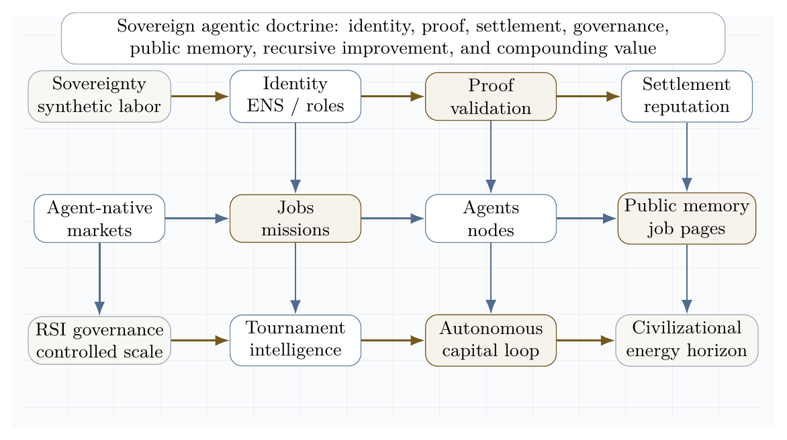
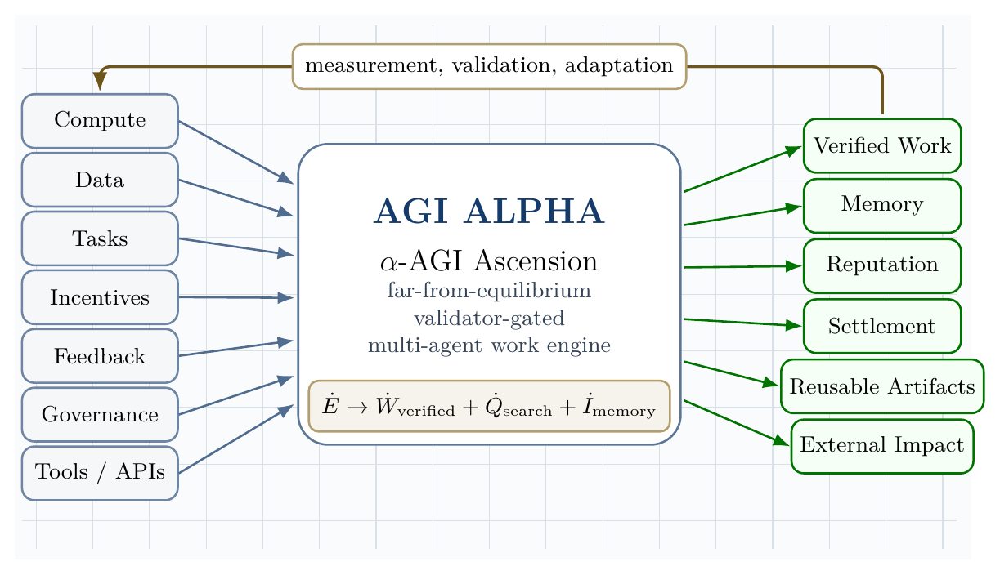
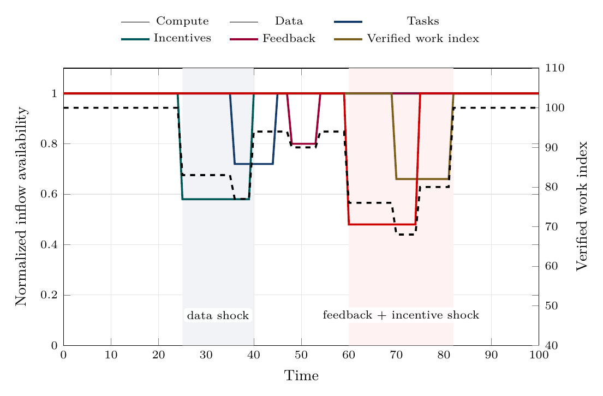
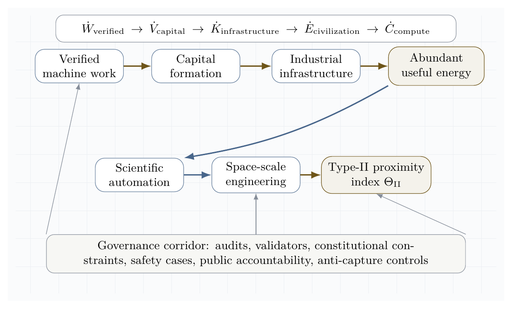
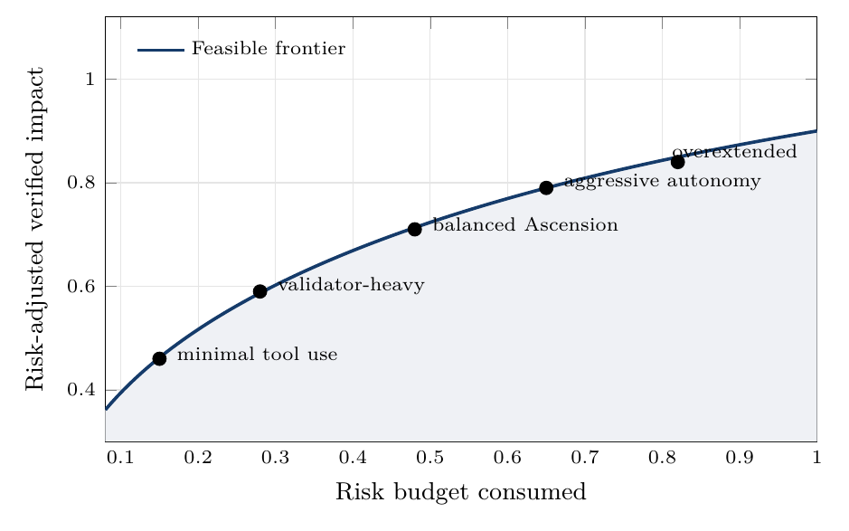

A Gibbs-Game-Hamiltonian Framework for α-AGI Ascension
April 26, 2026
Vincent Boucher
President of MONTREAL.AI and QUEBEC.AI
Written with AI
This paper develops a scientific framework for AGI ALPHA and α-AGI Ascension as a far-from-equilibrium, validator-gated, multi-agent work engine. The central thesis is that large-scale agentic coordination becomes operationally “alive” when continuous inflows of compute, data, tasks, incentives, and feedback sustain organized complexity that would otherwise decay into idle equilibrium, chaotic search, or brittle over-centralization. The framework integrates nonequilibrium thermodynamics, Gibbs-like free-energy objectives, statistical physics, Hamiltonian dynamics, game-theoretic mechanism design, multi-agent reinforcement learning, and contemporary agentic-AI deployment practice. We distinguish literal thermodynamic energy at the compute layer from formal free-energy analogues at the coordination layer. We then define measurable conditions for α-AGI Ascension: positive verified work output, bounded risk, productive swarm entropy, reliable credit assignment, validator precision, and impact-adjusted free-energy descent. The paper contributes a formal vocabulary, an architecture, a substrate-level distinction between intelligence models and intelligence organizations, a set of monitoring metrics, a real-task demonstration standard and minimal viable reference implementation for scalable/efficient/safe coordination, a civilizational-scale value horizon, a doctrine synthesis of the AGI Alpha corpus, and a frontier research synthesis across evolved coordinators, agentic organization, self-improving software agents, distributional safety, artificial life, scientific discovery systems, symbolic compression, self-play limits, and production-grade tool actuation. The research program turns agentic activity into externally verified impact without confusing maximum impact with unconstrained autonomy, and it adds a real-task demonstration gate: scalability, efficiency, and safety claims count only when they are supported by benchmarked tasks, reproducible traces, external validators, and cost/risk accounting. It further grounds scientific discovery in generalized validated search: directed evolution shows that real assays can substitute for omniscient prediction, while DISCO-style multimodal generative design shows that global proposal can supply novel evolvable starting points; AGI ALPHA generalizes this proposal-validation-lineage-compression loop from proteins to organizations of agents, tools, artifacts, validators, memory, incentives, and governance. Building on the Era of Experience thesis, AGI ALPHA treats evidence bundles and grounded tool interactions as long-lived experience streams from which routers, world models, reward ledgers, and governance policies can improve. Building on value-relevant learned planning, AGI ALPHA further defines ProofZero planning: a commercially independent layer that searches over abstract evidence states to predict grounded reward, routing policy, future verified value, and validator/safety/cost outcomes before acting. The resulting architecture makes experience itself a governed asset: every action, observation, validator decision, reward signal, cost, risk event, settlement update, delayed outcome, and reanalyzed trace becomes replayable training material for safer and more capable organizational intelligence.
The most rigorous compressed claim is:
\[ \boxed{ \alpha\text{-AGI Ascension} = \text{bounded, far-from-equilibrium, multi-agent work production} } \]
or, in operational form:
\[ \boxed{ \dot{E}_{\text{compute,data,capital,tasks}} \rightarrow \dot{W}_{\text{verified impact}} + \dot{Q}_{\text{dissipated search}} + \dot{I}_{\text{memory}} } \]
AGI ALPHA brings α-AGI Ascension to life when energy-mediated computation becomes a continuously replenished, statistically mapped, learned-and-Hamiltonian-routed, experience-grounded, game-theoretically aligned, validator-gated swarm that converts open-system inflows into verified, risk-bounded work. The router is not a single hand-coded scorer; it is a family of commercially independent coordination and planning substrates that learn when to decompose, delegate, verify, stop, escalate, remember, replay, search hypothetically, and improve from grounded experience.
The Transformer revealed a scalable substrate for intelligence inside models: a general architecture in which tokens, attention, depth, parameters, data, and compute could compound into increasingly capable representation, prediction, and reasoning systems [56]. AGI ALPHA proposes the analogous substrate above models: a scalable architecture for intelligence organizations, where agents, jobs, validators, memory, incentives, markets, governance, and settlement compound into increasingly capable systems of verified work.
The distinction is structural. The Transformer made intelligence scalable as computation; AGI ALPHA aims to make intelligence scalable as institution. In this framing, α-AGI Ascension is not merely many agents communicating. It is the emergence of an organizational substrate in which intelligence can be routed, validated, priced, remembered, governed, and recursively improved.
\[ \text{Transformer}=\mathcal{S}_{\text{model}}(\text{tokens},\text{attention},\text{parameters},\text{data},\text{compute}) \]
\[ \text{AGI ALPHA}=\mathcal{S}_{\text{organization}}(\text{agents},\text{jobs},\text{validators},\text{memory},\text{incentives},\text{governance}) \]
Transformer scaled intelligence in models; AGI ALPHA scales intelligence in organizations.
This substrate framing clarifies the paper’s strategic thesis. The next frontier is not only larger models, but governed intelligence organizations that convert model capability into proof-bearing labor, market activity, scientific discovery, capital formation, and energy-scale infrastructure under auditable constraints.
This manuscript is a theoretical systems paper. It does not claim that unrestricted artificial general intelligence has been achieved. It does not claim that autonomous economic sovereignty, autonomous legal agency, or mainnet-scale economic proof has been validated. It also does not treat internal demonstrations as sufficient evidence of external impact. Instead, the paper gives a formal model and a measurement program for testing whether a large-scale multi-agent system has entered a sustained, useful, governed, far-from-equilibrium coordination regime.
Public AGI Alpha materials frame α-AGI Architect as an operational blueprint for scalable multi-agent deployment and strategic infrastructure [16]. This manuscript treats that framing as a proposed system architecture to be formalized and tested, not as empirical proof of achieved AGI.
The phrase “to bring to life” is used in an engineering and cybernetic sense. A biological organism and an AI protocol are not the same class of object. The relevant analogy is the dissipative structure: a form of order sustained only while coupled to an environment that supplies energy, matter, information, and constraints. Prigogine’s nonequilibrium thermodynamics made this type of order central to the study of far-from-equilibrium systems [1]. In an agentic system, the sustained flows are compute, data, tasks, incentives, validation, feedback, policy, and tool access.
The AGI Alpha corpus supplied for this paper is treated as a strategic primary-source doctrine, not as empirical validation of unrestricted AGI. Its recurring architecture can be summarized as a sovereign synthetic labor stack: identity-bound agents, validator-gated jobs, proof-bearing work, reputation-weighted settlement, public memory, on-chain governance, recursive improvement controls, and reinvestment into compute, science, infrastructure, and energy capacity. Public repositories and public mainnet contract pages provide the operational vocabulary for this stack: AGI Jobs as market, Alpha nodes as workers, Meta-Agentic cognition as the coordination layer, \(AGIALPHA\) as incentive substrate, and ENS-backed job pages as durable public memory [19-23].
In this synthesis, AI sovereignty means the capacity of an institution, nation, or protocol to command verifiable machine labor without surrendering identity, memory, settlement, or governance to an opaque external monopoly. The agent-native economy means a market in which machines can discover work, bid, execute, prove, settle, update reputation, and route future labor under auditable rules. Recursive self-improvement governance means that improvement is permitted only through traceable, permissioned, validator-reviewed updates rather than unbounded self-modification.
The doctrine is therefore not merely accelerationist. It is a control architecture: autonomy measured, work proven, value settled, memory made public, and scale constrained by governance before it compounds into larger industrial and energy systems.

This paper makes twenty contributions.

The architecture figure compresses the central systems claim: α-AGI Ascension is sustained organization under regulated inflow, not isolated one-shot inference.
Let:
\[ \mathcal{A}=\{a_1,\ldots,a_N\} \]
be a population of agents, and let:
\[ \mathcal{J}=\{j_1,\ldots,j_M\} \]
be a stream of jobs. Each job is a tuple:
\[ j=(o,c,v,b,d,\rho) \]
where \(o\) is the objective, \(c\) is the constraint set, \(v\) is the validation criterion, \(b\) is the bounty or reward, \(d\) is the deadline, and \(\rho\) is the risk class.
AGI ALPHA is defined here as the proposed runtime/protocol layer that routes jobs, agents, tools, memory, proofs, incentives, and governance into a coordinated work-producing system.
α-AGI Ascension is defined as the operating regime in which heterogeneous agents form, execute, validate, and dissolve coalitions to maximize verified impact under bounded risk.
Formally, Ascension requires:
\[ \frac{d}{dt}\mathbb{E}[V_{\text{verified}}] > 0 \]
while maintaining:
\[ \mathbb{E}[R_{\text{safety}}] \leq R_{\max} \]
and productive swarm entropy:
\[ S_{\min}<S_{\text{swarm}}<S_{\max}. \]
The lower entropy bound prevents rigid monoculture; the upper bound prevents incoherent chaos.
Dissipative structures are ordered patterns that arise and persist far from equilibrium through exchange with an environment. Prigogine’s work is the canonical foundation for this perspective [1]. The agentic analogue is not metabolism in a biological sense; it is the use of electricity, processors, networks, storage, data, tools, and validation to sustain organized computation.
Classically, Gibbs free energy is:
\[ G=H-TS. \]
At constant temperature and pressure, negative \(\Delta G\) indicates a spontaneous direction of change, \(\Delta G=0\) indicates equilibrium, and Gibbs free energy is associated with the useful non-expansion work obtainable from a process under ideal conditions. OpenStax summarizes these relationships and the role of coupled reactions in driving otherwise unfavorable processes [2]. We use physical Gibbs energy literally at the hardware layer and a Gibbs-like optimization functional at the agentic coordination layer.
Jaynes’ information-theoretic formulation of statistical mechanics frames probability distributions as maximum-entropy inferences under constraints [3]. This is useful for agent swarms because exact microstate tracking is intractable. We model the swarm by distributions over possible configurations and monitor macro-observables such as entropy, expected verified value, risk, cost, and coalition stability.
Bailey and Piliouras show a formal connection between multi-agent learning in network zero-sum games and Hamiltonian dynamics [4]. This matters because a system of interacting learners can cycle rather than converge. α-AGI must therefore combine Hamiltonian exploration with dissipative convergence into validated work.
Recent surveys of LLM-based multi-agent systems emphasize profiling, communication, workflow design, infrastructure, security, benchmarking, and scalability challenges [5-7]. These surveys support a core claim of this paper: large-scale multi-agent intelligence is not merely a matter of increasing the number of agents. The difficult problems are orchestration, communication, grounding, role specialization, credit assignment, validation, and governance.
Two recent coordinator papers sharpen the multi-agent coordination problem. Conductor shows that a language model can learn to output natural-language subtasks, worker assignments, and access lists, thereby learning not only model routing but also prompt-engineered decomposition and communication topology; randomized worker-pool training supports adaptation to cost and availability constraints, while recursive topologies create a bounded test-time scaling axis [69]. TRINITY shows the complementary extreme: a compact language model plus a very small routing head can select model/role pairs across turns, using a Thinker/Worker/Verifier grammar, hidden-state representations, and separable evolutionary optimization under low-signal terminal rewards [24]. AGI ALPHA treats these works as scientific prior-art context, not implementation dependencies: its coordination layer must learn over real-work evidence states, bounded tools, validators, ledgers, memory, settlement, and governance.
Schrittwieser et al.’s Mastering Atari, Go, Chess and Shogi by Planning with a Learned Model is cited here as prior-art inspiration for a precise principle: the learned model used for planning need not reconstruct the full environment. It can instead learn an abstract latent state that predicts the quantities most relevant to search, especially reward, action policy, and future value [72]. The AGI ALPHA translation is not a game-playing algorithm and not a dependency on any third-party implementation. It is an organizational design principle: learn abstract evidence-state dynamics that predict verified work, cost, safety, validator outcomes, and downstream value well enough to improve routing decisions before acting in the world.
This matters because AGI ALPHA cannot rely on perfect simulators for real organizations, tools, markets, scientific workflows, or protocol-native work. The planning model should therefore be value-relevant rather than fully reconstructive: it should model only what is needed to select safer, cheaper, more useful organizational actions under validator and governance constraints.
Recent official and community guidance converges on a practical principle: production agents require clear tools, guardrails, tracing, orchestration, and escalation. Anthropic distinguishes workflows, where code paths are predefined, from agents, where models dynamically direct tool use and process control [10]. OpenAI’s agent guidance emphasizes model selection, tool design, guardrails, single-agent versus multi-agent orchestration, manager patterns, decentralized handoffs, and tracing [11]. MCP and related protocols are emerging as standard ways to connect agents to external data and tools, but they also expand the security boundary [12].
NIST’s AI Risk Management Framework and the Generative AI Profile provide lifecycle risk-management guidance for design, development, use, and evaluation [8]. OWASP’s Agentic AI Threats and Mitigations and Securing Agentic Applications guidance emphasize threat modeling for autonomous systems, including tool misuse, identity and privilege abuse, memory risks, multi-agent propagation, and governance failures [9]. These sources motivate the paper’s insistence that maximum impact must mean verified bounded impact, not unconstrained autonomy.
The supplied corpus and the recent literature converge on one hard problem: how to make many heterogeneous agents coordinate to maximum useful effect without collapsing into waste, collusion, brittle hierarchy, or unsafe autonomy. The strongest current answer is not a single monolithic model. It is an institutionalized control stack that combines evolved coordination, symbolic compression, persistent memory, test-time learning, proof-bearing execution, and distributional safety.
Conductor is directly relevant because it demonstrates that natural-language coordination can be learned: a coordinator can output subtasks, worker assignments, and access relationships, learning not only which model to call but what each worker should attempt and what information it should see [69]. TRINITY supplies the complementary lightweight lesson: coordination can be represented as a compact evidence-state-to-action map, where hidden-state features from a small model feed a tiny head that selects model/role pairs across Thinker, Worker, and Verifier turns [24]. Multi-Agent Collaboration via Evolving Orchestration reaches a related conclusion from a different direction: static topologies scale poorly, while a learned orchestrator can dynamically activate, sequence, and prune agents as task states evolve [25]. The Era of Agentic Organization extends the same idea into asynchronous thinking: an organizer assigns sub-queries, merges intermediate knowledge, and can itself be optimized through reinforcement learning [26].
Planning and tool use require a second discipline: the LLM should not be allowed to hallucinate the plan when a symbolic planner, executor, or validator can do the logical work. DUPLEX restricts the LLM to schema-guided information extraction and hands rigorous synthesis to a PDDL planner, activating a slower reflective repair loop only after planning failure [27]. AT\(^2\)PO adds the learning counterpart: multi-turn agentic RL needs turn-level trees, entropy-guided exploration, and turn-wise credit assignment because sparse terminal rewards are too coarse for agentic action [28].
Persistent agency and recursive improvement add a third layer. Sophia frames a persistent agent as a System 3 wrapper over perception and deliberation, maintaining narrative identity, long-horizon adaptation, thought search, memory, and hybrid reward [29]. Self-play SWE-RL shows that software agents can gather experience from real repositories by injecting and repairing bugs specified by tests rather than relying on human-written issues [30]. Huxley-Gödel Machine highlights a subtle but essential distinction: an agent’s current benchmark performance is not the same as its self-improvement potential; metaproductivity must be measured through the quality of descendants [31]. ThetaEvolve shows how test-time learning can internalize evolving strategies on open optimization problems instead of leaving all progress in inference-only search [32].
Artificial-life systems sharpen the thermodynamic analogy. The bacterial flagellar motor illustrates that apparently mysterious living motion can be explained as a physical motor driven by proton motive force and molecular interactions, without invoking a special life force [33]. Digital Ecosystems shows the computational analogue: multiple neural cellular automata can compete, adapt online, and be steered toward edge-of-chaos regimes where stable complexity emerges from local interactions and continuous learning [34].
Finally, the safety and economic literature argues that collective capability must be governed distributionally. Distributional AGI Safety explicitly addresses the patchwork hypothesis: AGI-level capability may first appear through coordinated groups of sub-AGI agents, requiring safeguards beyond individual-model alignment [35]. Virtual Agent Economies similarly argues for proactively designed agent markets with auctions, accountability, trust, safety, and steerability [36]. Large Causal Models from LLMs, K-Dense Analyst, Synthetic Data RL, DISCO, and ASI-Arch point to the scientific discovery frontier: causal extraction, hierarchical scientific agents, task-defined RL, multimodal molecular design, and autonomous architecture search all show how agentic systems can transform knowledge into validated invention when paired with execution and evaluation [37-41].


The resulting doctrine is a scientific operating principle:
Operating principle. Maximum useful effect = evolved coordination + formal verification + recursive learning + distributional governance.
This principle reframes the central economic vision. A superhuman invention engine is not best understood as a single automation product. It is a compounding institutional asset: the owner-operator uses it to generate proofs, tools, science, infrastructure, energy capacity, and more compute, while external access is mediated through jobs, markets, and validator-gated settlement.
The following matrix translates the supplied frontier corpus into design requirements for AGI ALPHA. The point is not to cite every item as proof of achieved AGI. The point is to extract the strongest operational pattern from each line of research and convert it into an engineering control.
| Frontier signal | Core lesson | AGI ALPHA design implication |
|---|---|---|
| Evolved LLM coordination | Coordination can be optimized directly, not merely hand-written. | Learn a coordinator that selects roles, models, tools, validators, and stopping rules under budget. |
| Agentic organization | Work graphs can be asynchronous, dynamic, and learned. | Route jobs as evolving work graphs rather than static chains of agents. |
| Dual-system planning | LLMs should ground semantics; symbolic planners should enforce logic when stakes are high. | Separate semantic extraction from plan synthesis, validation, and settlement. |
| Turn-level agentic RL | Sparse terminal rewards are insufficient for multi-turn work. | Assign credit and policy updates at the turn, tool-call, and subgoal level. |
| Persistent agents | Long-lived agents need memory, self-models, and procedure updates. | Treat identity, lineage, reputation, and memory as state variables, not chat history. |
| Self-play software RL | Agents can create training experiences from real codebases through test-specified perturbations. | Use sandboxed self-play only when tasks are externally checkable by tests, proofs, or validators. |
| Test-time evolution | Search should become learning when repeated task families reveal reusable structure. | Convert successful traces into updateable routing priors, skills, and symbolic rules. |
| Artificial-life ecosystems | Local competition plus learning can stabilize edge-of-chaos complexity. | Use bounded competition, niches, gradients, and perturbation tests to discover robust agent ecologies. |
| Distributional AGI safety | AGI-level capability may emerge from populations before a monolith. | Govern the swarm economy itself: markets, audits, reputation, identity, and containment. |
| Scientific discovery agents | Causal extraction, bio-design, data science, and architecture search become agentic workflows. | Build invention loops that couple hypothesis, execution, verification, compression, and reinvestment. |
| Web/tool agents | Browser and API actuation turn reasoning into external action. | Treat tools as risk-bearing actuation channels with schemas, scopes, logs, and reversible modes. |
| ARC-style abstraction | Extreme generalization favors symbolic compression and deliberate test-time search. | Reward compact rules that survive held-out tests, not persuasive explanations alone. |
The hard problem is not merely to make agents numerous. The hard problem is to make them coordinate to maximum useful effect. In this paper, maximum effect is not raw throughput. It is verified work under bounded risk, low waste, recoverable failures, and compounding memory:
\[ \pi^*_{\text{coord}} = \arg\max_{\pi} \mathbb{E}\left[ V_{\text{verified}} - \lambda C_{\text{compute}} - \rho R_{\text{safety}} - \kappa C_{\text{coordination}} - \mu U_{\text{unknown}} \right]. \]
The frontier literature implies that this policy must be evolved, tested, and audited. Hand-designed org charts are too brittle. Pure self-play is too easily untethered from human-useful objectives outside two-player zero-sum games. Static swarms are too expensive. Single-model planners are too hallucination-prone. The strong answer is a validator-gated coordination policy that learns which agent should think, which should act, which should verify, when to stop, and when to escalate.
This gives a sharper version of the AGI ALPHA thesis:
\[ \boxed{ \text{Ascension is not many agents. Ascension is learned coordination under proof.} } \]
The new frontier is not merely multi-agent prompting. It is learned coordination: a policy that decides which agents should exist for a task, what each agent should do, what each agent may see, which tools each agent may use, how long the workflow may run, which validators terminate the process, and what evidence is written back into memory.
Conductor lesson. Conductor shows that a language model can learn to orchestrate other language models by emitting natural-language subtasks, worker assignments, and access lists [69]. The key contribution is not only routing among workers. It is learning a prompt-engineered decomposition and communication topology: which worker should plan, which should execute, which intermediate outputs should be visible, and how much compute a task deserves. Randomized worker-pool training supports adaptation to user cost and availability constraints, and recursive topologies create a bounded test-time scaling axis.
Mapped into AGI ALPHA, the Conductor-style lesson becomes:
AGI ALPHA mapping: task manifest -> role graph -> subtask prompts -> access graph -> worker calls -> validator gate -> evidence bundle.
TRINITY lesson. TRINITY shows that a lightweight coordinator can use hidden-state representations from a compact language model plus a tiny head to select agents and roles across multiple turns [24]. Its Thinker/Worker/Verifier protocol is a minimal learned coordination grammar: one role decomposes, one role executes, one role checks and terminates. Its sep-CMA-ES training result is important because coordination often has low-signal terminal rewards, tight evaluation budgets, and weakly coupled parameters; in that regime, derivative-free evolutionary optimization can be more practical than standard policy gradients or supervised imitation. TRINITY’s hidden-state separability analysis also suggests a diagnostic rule for AGI ALPHA: measure task/agent separability before choosing whether to use a heuristic router, a language workflow router, a lightweight representation router, an evolutionary coordinator, or a hybrid.
Mapped into AGI ALPHA, the TRINITY-style lesson becomes:
AGI ALPHA mapping: evidence state -> lightweight routing head -> role assignment -> validator-terminated workflow.
AGI ALPHA synthesis. Conductor and TRINITY primarily demonstrate LLM-to-LLM coordination on reasoning benchmarks. AGI ALPHA must extend the same lesson into real work: tools, APIs, code execution, browsers, databases, scientific workflows, policy-bound actions, validator gates, safety ledgers, cost ledgers, settlement, memory, and governance. Its routing decisions are judged not by conversational elegance but by externally verified work, cost, risk, reproducibility, lineage, and settlement.

The following method names are AGI ALPHA-native and commercially independent. They are inspired by the coordination principle of Conductor and TRINITY, but they do not depend on their code, prompts, weights, figures, role prompts, exact training recipes, or implementation details.
| Method | Definition |
|---|---|
| Proof-Conditioned Orchestration | Routing conditioned on task manifest, prior evidence bundles, validator availability, cost, risk, and expected proof quality. |
| Evidence-State Coordinator | A lightweight router whose input state is the current evidence graph: task, trace, artifacts, test results, costs, risks, memory, and validator outcomes. |
| Validator-Terminated Role Graphs | Learned role graphs whose stopping condition is an external validator, formal check, policy gate, or explicit escalation rule. |
| Proof-Gradient Routing | Routing updates that move probability mass toward agents and topologies with higher verified value per unit cost and lower false-acceptance risk. |
| Coordination Fitness Landscapes | Empirical landscapes over agent-role-tool-validator combinations, learned from accepted and rejected evidence bundles. |
| Recursive Audit Routing | Bounded recursion in which a router can call a critique/router layer only under budget, depth, and validator constraints. |
| Capability Complementarity Atlas | A memory map of which agents, tools, and roles complement or interfere with one another across task families. |
| Evidence-to-Policy Compression | Compression of traces, failures, and validator reports into reusable routing priors, contracts, and safety rules. |
| Tool-Bounded Role Contracts | Role definitions that include tool scopes, data access, budget, allowed actions, prohibited actions, and validator obligations. |
| Budgeted Constellation Search | Search over agent constellations under token, dollar, latency, risk, and validator budgets. |
| Dimension | Conductor | TRINITY | AGI ALPHA |
|---|---|---|---|
| Coordination representation | Natural-language workflow with subtasks, worker ids, and access lists. | Hidden-state representation plus small head over agent-role actions. | Evidence-state graph over task, agents, tools, validators, memory, ledgers, settlement, and governance. |
| Learning method | Reinforcement learning over executed workflows. | Evolutionary optimization of a lightweight coordinator. | Commercially independent router family: heuristic, language, representation, evolutionary, RL, and hybrid proof-conditioned routers. |
| Role system | Flexible natural-language subtasks and worker assignments. | Thinker / Worker / Verifier tri-role grammar. | Tool-bounded role contracts: planner, executor, retriever, simulator, validator, critic, auditor, deployer, settlement agent. |
| Worker-pool adaptation | Randomized worker-pool training for cost and availability constraints. | Selects among a pool of LLMs and roles. | Capability complementarity atlas plus budgeted constellation search over agents, tools, validators, and policies. |
| Recursion / test-time scaling | Recursive topology allows bounded calls to the coordinator itself. | Multi-turn protocol with bounded turn budget. | Recursive audit routing under depth, cost, risk, validator, and escalation constraints. |
| Validation | Benchmark correctness after workflow execution. | Verifier role and terminal benchmark reward. | External validator gates: tests, formal checks, simulations, audits, market settlement, human expert review, and real-world outcomes. |
| Evidence trace | Workflow trace and benchmark result. | Multi-turn transcript and terminal score. | Machine-readable evidence bundle: routing record, tool trace, artifacts, validation, cost, risk, settlement, provenance, lineage. |
| Tool actuation | Primarily LLM-to-LLM benchmark workflows. | Primarily LLM-to-LLM benchmark workflows. | Bounded tools, APIs, code, browser, database, scientific workflow, and protocol-native job execution. |
| Safety controls | Benchmark-format constraints. | Turn budget and verifier termination. | Least privilege, policy gates, safety ledger, reversible actions, escalation, auditability, and governance. |
| Settlement / reputation | Not the central object. | Not the central object. | Proof-based settlement, reputation, credit assignment, and future routing probability. |
| Commercial independence | Prior-art inspiration only. | Prior-art inspiration only. | Independent terminology, architecture, evidence memory, safety-control layer, and settlement mechanism. |
The Hamiltonian router remains useful as the simplest interpretable baseline, but it is no longer the only routing model. AGI ALPHA defines a router family:
| Router | Description |
|---|---|
| R0: Heuristic Hamiltonian router | Hand-specified free-energy/Hamiltonian scorer over cost, risk, complementarity, and expected verified value. |
| R1: Natural-language workflow router | Generates role graph, subtask prompts, access graph, and worker calls in natural language. |
| R2: Evidence-state lightweight router | Maps evidence-state features to agent-role-tool-validator choices with a compact head. |
| R3: Evolutionary coordinator | Optimizes routing parameters by derivative-free search under sparse terminal validator rewards. |
| R4: Reinforcement-learned coordinator | Learns workflow decisions from validator rewards, tool outcomes, and cost/risk penalties. |
| R5: Hybrid router | Selects R0-R4 by task family, cost, risk, validator availability, separability diagnostics, and evidence density. |
Every router must output:
A task \(j\) with evidence state \(e_t\) is routed by:
\[ R_k(e_t,j)\rightarrow(A,\rho,S,\Gamma_T,B,V_{set},\tau_{stop},\tau_{esc}), \]
where \(A\) is the selected constellation, \(\rho\) are role contracts, \(S\) are subtasks, \(\Gamma_T\) is the access/tool graph, \(B\) is the budget, \(V_{set}\) is the validator set, and \(\tau_{stop},\tau_{esc}\) are stopping and escalation rules.
The hybrid router is promoted only when evidence supports it:
\[ R^*(j)=\arg\max_{R_k}\;\mathbb{E}[D_{\mathrm{real}}\mid j,R_k]-\lambda C-\rho R-\kappa O. \]
Operational router-selection example. The router family is not a menu of slogans; it is a decision policy. R0 is used as the auditable fallback when evidence is sparse, when a deterministic baseline is required, or when regulators/auditors require a transparent score. R1 is preferred for open-ended reasoning or research tasks where the hard problem is subtask synthesis, access-list design, and natural-language delegation. R2 is preferred for high-volume, high-structure task families where the evidence-state features are separable and latency/cost must be minimized. R3 is preferred when terminal rewards are sparse, noisy, expensive, or non-differentiable, because derivative-free search can optimize routing without labels. R4 is preferred only after a stable domain has accumulated enough validated trajectories for reward learning without reward hacking. R5 is the production selector: it chooses among R0-R4 by task family, cost, risk class, validator availability, separability diagnostics, evidence density, and required auditability.
Compact decision rule. In deployment, router choice should be logged as part of the evidence bundle. A simple version is:
| Task condition | Preferred router | Reason |
|---|---|---|
| Sparse prior evidence, low risk, strong need for auditability | R0 | Transparent baseline and diagnostic control. |
| Open-ended decomposition or research synthesis | R1 | Natural-language subtasks and communication topology matter most. |
| High-volume structured tasks with separable evidence features | R2 | Compact evidence-state routing minimizes latency and cost. |
| Sparse, noisy, terminal validator rewards | R3 | Evolutionary search tolerates low-SNR objectives without dense labels. |
| Stable domain with many replayable validated episodes | R4 | Reinforcement learning can optimize long-horizon tool/cost/risk tradeoffs. |
| Mixed, high-value, or high-risk work | R5 | Hybrid proof-conditioned arbitration chooses among R0-R4 by task, cost, risk, validators, evidence density, and auditability. |
Promotion rule: R0 is always available as the reproducible baseline; any learned router must earn promotion through higher \(D_{\mathrm{real}}\), equal-budget comparisons, zero critical safety violations, and reproducible evidence bundles.
The paper does not claim that AGI ALPHA invents learned LLM coordination from scratch. The strict novelty claim is the full-stack organizational substrate: learned routing is integrated with bounded tools, external validators, machine-readable evidence bundles, cost and safety ledgers, memory graphs, proof-based settlement, reputation updates, and governance. Conductor and TRINITY show that coordination itself can be learned in benchmark-centric LLM collaboration. AGI ALPHA’s contribution is to lift learned coordination into a validator-gated, commercially deployable work system where routing decisions are judged by externally verified artifacts, reproducible traces, real-task cost, safety outcomes, and future routing improvement.
Conductor and TRINITY are cited as frontier demonstrations that coordination itself can be learned. AGI ALPHA does not depend on their code, weights, prompts, figures, role prompts, exact training recipes, data, or proprietary implementation details. AGI ALPHA develops its own commercially independent coordination substrate, validator architecture, routing state, evidence memory, safety-control layer, cost/risk accounting, settlement mechanism, and governance interface.
The state-of-the-art lesson from Conductor and TRINITY is that learned coordination can beat manual scaffolding. The AGI ALPHA thesis is that learned coordination must now be lifted from benchmark-only LLM collaboration into validator-gated real-world work systems. The novel contribution claimed here is not that AGI ALPHA invents learned LLM-to-LLM coordination from scratch; Conductor and TRINITY are cited precisely because they show that coordination itself can be learned. AGI ALPHA’s commercially independent contribution is the full-stack organizational generalization: routing plus bounded tools, external validators, machine-readable evidence bundles, safety and cost ledgers, memory, reputation, settlement, governance, and real-task promotion rules in one substrate. Conductor and TRINITY optimize benchmark collaboration; AGI ALPHA specifies the institutional layer needed to turn learned coordination into auditable machine labor.
AGI ALPHA is therefore SOTA-aligned as a research program and architecture. It becomes empirically SOTA only if its proof-conditioned router beats Conductor-style, TRINITY-style, single-agent, fixed-workflow, and unstructured-swarm baselines on real tasks under equal model, tool, and budget constraints with zero critical safety violations and reproducible evidence bundles.
Silver and Sutton’s Welcome to the Era of Experience argues that human-generated data is approaching limits in frontier domains and that future agents will improve primarily through experience generated by acting in environments, observing consequences, receiving grounded rewards, and planning over long streams of interaction [70]. The paper identifies four dimensions that matter for future agents: long streams of experience, rich grounded actions and observations, grounded rewards, and planning or reasoning over experience.
This section also explicitly anchors the experience layer in standard reinforcement-learning concepts from Sutton and Barto’s Reinforcement Learning: An Introduction, including value estimation from experience, model-based planning, temporal-difference learning, Dyna-style learning from real and simulated experience, and options as temporal abstractions [71]. AGI ALPHA translates those concepts into organizational infrastructure: evidence streams become the experience base, world models predict consequences of agent/tool actions, temporal options become reusable validator-bounded workflows, and governance controls which reward signals may update production policy.
AGI ALPHA adopts this as conceptual inspiration and prior-art context only. The scientific implication is decisive: AGI ALPHA should not merely coordinate agents across isolated tasks. It should generate, record, validate, compress, and learn from experience streams. Evidence bundles are therefore not just audit logs. They are the training substrate for future routing, world modeling, reward calibration, safety policy, reputation, settlement, and governance.
| Era-of-experience dimension | AGI ALPHA translation |
|---|---|
| Streams of experience | Long-lived task, job, tool, validator, settlement, incident, and delayed-outcome streams. |
| Grounded actions and observations | Bounded tools, APIs, code execution, browsers, databases, sensors, simulations, lab interfaces, and protocol-native actions. |
| Grounded rewards | Validator outcomes, test results, user outcomes, scientific measurements, cost, safety, latency, reproducibility, market settlement, and delayed real-world outcomes. |
| Planning and reasoning over experience | World models, consequence-aware routing, temporal option registries, evidence-to-policy compression, and sandbox-to-real escalation planning. |

An AGI ALPHA experience event is defined as:
\[ e_t=(s_t,a_t,o_{t+1},r_t,v_t,c_t,\rho_t,m_t) \]
where:
The experience stream is:
\[ E_{0:T}=\{e_0,e_1,\ldots,e_T\}. \]
This matters because isolated task success can be misleading. A patch may pass immediate tests but fail under delayed deployment. A browser workflow may satisfy a page-state evaluator while violating a policy. A scientific design may score well in a proxy but fail a real assay. The experience stream preserves the difference between immediate acceptance and longer-run consequence. ### Sovereign Experience Control Plane
The decisive upgrade is to treat experience as first-class infrastructure. A one-shot evidence bundle proves what happened in one run; a sovereign experience stream preserves the ordered sequence of runs from which future routers, validators, world models, option policies, and governance weights can improve. This turns AGI ALPHA from a task coordinator into an experience operating system for machine labor.
The experience-control plane maintains four coupled state updates:
\[ M_{t+1}=U_M(M_t,e_t) \]
\[ \Omega_{t+1}=U_\Omega(\Omega_t,r_t,v_t,\rho_t,\Pi_t) \]
\[ M_{\phi,t+1}=U_\phi(M_{\phi,t},E_{0:t}) \]
\[ \pi_{t+1}=U_\pi\big(\pi_t,\mathrm{Compress}(E_{0:t}),M_{\phi,t+1},\Omega_{t+1}\big). \]
Here \(M_t\) is operational memory, \(\Omega_t\) is the reward-governance state, \(M_{\phi,t}\) is the world model, and \(\pi_t\) is the router/policy state. The update rule is deliberately separated into memory, reward governance, world modeling, and routing because each subsystem has a different failure mode. Memory can be poisoned, rewards can be gamed, world models can extrapolate incorrectly, and routers can overfit to validator shortcuts. The control plane therefore requires provenance, quarantine, replay, delayed-outcome checks, and independent validator review before high-impact traces are allowed to influence production routing.

The key distinction is:
| Object | Function | Can update production policy? |
|---|---|---|
| Evidence bundle | Immutable proof of a single run | No, not by itself |
| Experience event | Atomic state-action-observation-reward-validation-cost-risk-memory tuple | Only after provenance checks |
| Experience stream | Ordered sequence of events across jobs and cycles | Yes, if replayable and validated |
| Reward ledger | Versioned consequence record | Yes, under governance weights |
| World model | Predictive model of outcomes and risk | Yes, if calibrated and monitored |
| Temporal option | Reusable validated macro-workflow | Yes, if bounded by initiation, validation, termination, and risk class |
The system’s experience-grounded progress is measured over time, not by a single impressive run:
\[ D_{\mathrm{experience}}(T)= \frac{1}{T}\sum_{t=1}^{T} \left[ \frac{V^{(t)}_{\mathrm{verified}}}{C^{(t)}_{\mathrm{tokens}}+C^{(t)}_{\mathrm{tool}}+C^{(t)}_{\mathrm{time}}} \right] (1-R^{(t)}_{\mathrm{critical}}) (1-O^{(t)}_{\mathrm{coord}}) (1-H^{(t)}_{\mathrm{reward}}), \]
where \(H^{(t)}_{\mathrm{reward}}\) is the detected reward-hacking or reward-provenance penalty. A claimed experience gain must show that \(D_{\mathrm{experience}}(T)\) improves on held-out future tasks while critical violations, reward hacking, and false acceptance do not increase.
AGI ALPHA separates validators from rewards.
Thus the system tracks both:
\[ v_t=\mathrm{accept/reject/escalate} \]
and:
\[ r_t=R(o_{t+1},c_t,\rho_t,\mathrm{delayed\ outcomes},\mathrm{governance\ weights}). \]
This distinction protects AGI ALPHA from mistaking a narrow pass/fail gate for a complete account of value, truth, safety, or long-run usefulness.
These methods are AGI ALPHA-native and commercially independent. They are inspired by the general scientific lesson that agents can learn from grounded experience, but they do not depend on Silver/Sutton code, figures, algorithms, training recipes, or proprietary artifacts.
| Method | Definition and commercial-independence note |
|---|---|
| Experience-Grounded Coordination | Routing conditioned on current task state plus accumulated experience streams, not isolated prompts. |
| Sovereign Experience Streams | Institution-owned streams of task, tool, validator, cost, risk, settlement, and delayed-outcome events. |
| Grounded Reward Ledger | Versioned accounting of rewards from tests, simulations, markets, sensors, assays, user outcomes, safety, latency, and reproducibility. |
| Validator-Reward Separation | Explicit separation between acceptance gates and consequence-measuring rewards. |
| Experience-to-Policy Compression | Compression of repeated traces into routing priors, validator policies, temporal options, and governance updates. |
| Consequence-Aware Routing | Routing that predicts downstream cost, safety, latency, validator failure, delayed outcome, and escalation risk. |
| World-Model Risk Planning | Predictive modeling used before tool escalation, external deployment, or high-risk scientific action. |
| Temporal Option Registry | Reusable macro-actions with initiation conditions, workflow policy, validator, termination condition, risk class, and lineage. |
| Bi-Level Reward Governance | Low-level grounded signals are weighted and corrected by high-level policy, law, user feedback, institutional priorities, and safety events. |
| Exploration Corridors | Bounded zones where agents may explore novel actions, tools, or hypotheses under budget, sandbox, validator, rollback, and quarantine constraints. |
| Delayed Outcome Attribution | Assignment of long-run outcomes back to prior routing, tool, prompt, policy, and agent decisions. |
| Experience Quarantine and Replay | Isolation of suspicious, unsafe, poisoned, or reward-hacking traces, followed by controlled replay before learning from them. |
Low-level reward signals can come from unit tests, simulations, markets, sensors, scientific assays, user outcomes, cost, latency, safety, and reproducibility. These signals are powerful because they measure consequences rather than only predicted human approval. They are also dangerous because any single signal can be gamed.
AGI ALPHA therefore uses a governed reward functional:
\[ R_t^{\mathrm{AGI\ ALPHA}} = G_\omega\left(r_t^{\mathrm{tests}},r_t^{\mathrm{simulation}},r_t^{\mathrm{market}},r_t^{\mathrm{safety}},r_t^{\mathrm{cost}},r_t^{\mathrm{latency}},r_t^{\mathrm{reproducibility}},r_t^{\mathrm{human}},r_t^{\mathrm{delayed}}\right), \]
where \(G_\omega\) is a versioned governance policy. The low level optimizes grounded signals; the high level adjusts which signals matter, how they are weighted, and when safety or law overrides apparent reward. User feedback, legal constraints, incident reports, institutional policy, and human concern signals provide top-level correction. This makes reward design auditable and governable rather than an invisible optimization target.
Experience streams support world models. This follows the standard reinforcement-learning idea that agents can improve by learning predictive models from experience and using those models for planning; AGI ALPHA reinterprets this as an auditable organizational mechanism rather than a single-agent algorithm [71]. AGI ALPHA defines:
\[ M_\phi(o_{t+1},r_t,\rho_{t+1}\mid s_t,a_t), \]
where \(M_\phi\) predicts observations, reward, and future risk from a state-action pair. Such models support consequence-aware routing, delayed outcome prediction, safety forecasting, cost and latency forecasting, validator failure prediction, scientific experiment planning, sandbox-to-real escalation, rollback, and quarantine decisions.
The router family becomes experience-aware:
\[ R_k(e_t,j,E_{0:T},M_\phi)\rightarrow(A,\rho,S,\Gamma_T,B,V_{set},\tau_{stop},\tau_{esc}),\qquad k\in\{0,1,2,3,4,5\}. \]
A router should not merely ask which agent is best for the immediate prompt. It should ask which constellation is most likely to produce valid work after considering downstream validators, delayed outcomes, cost, safety, and reversibility.
Long streams of experience make reusable temporal abstractions possible. In reinforcement learning, options provide a standard formalism for temporally extended actions; AGI ALPHA turns that idea into commercially independent, validator-bounded organizational macro-workflows [71]. A validated workflow becomes an option or macro-action:
\[ \mathrm{Option}=(\mathcal{I},\pi_{workflow},V_{gate},\tau_{term},\rho_{risk},H_{evidence}). \]
Here \(\mathcal{I}\) is the initiation condition, \(\pi_{workflow}\) is the workflow policy, \(V_{gate}\) is the validator, \(\tau_{term}\) is the termination condition, \(\rho_{risk}\) is the risk class, and \(H_{evidence}\) is the evidence history. Examples include software repair, benchmark execution, literature review, simulation, red-team review, deployment rollback, and scientific experiment options. Temporal abstraction matters because civilization-scale work is not a collection of one-shot answers; it is the repeated reuse and improvement of verified procedures.
Grounded rewards are necessary, but unsafe if treated as the only objective. AGI ALPHA therefore requires reward provenance, reward versioning, counterfactual reward audits, adversarial reward tests, delayed-outcome checks, independent validator review, safety overrides, rollback and quarantine, human concern signals, reward-model incident reports, and replay before learning from suspicious traces.
The system is allowed to learn from experience only when the experience remains traceable, replayable, and governed.
Silver and Sutton are cited as conceptual inspiration and prior-art context for the shift from human-data-centric systems toward experience-grounded agents, and Sutton and Barto are cited for standard reinforcement-learning concepts such as world models and temporal abstraction. AGI ALPHA does not depend on their code, figures, algorithms, training recipes, terminology beyond ordinary citation, or implementation details. AGI ALPHA defines its own commercially independent experience tuple, evidence-stream architecture, grounded reward ledger, validator-reward separation, world-model planning interface, temporal option registry, router-family extension, safety controls, and settlement mechanism.
The frontier lesson from MuZero is not generic model-based reinforcement learning. Its decisive scientific contribution is value-relevant planning: learning an abstract latent model that predicts the quantities needed for search - reward, policy, and value - without requiring reconstruction of the full environment state [72]. AGI ALPHA adopts this as inspiration only and translates it into a commercially independent planning substrate over organizational evidence.
For AGI ALPHA, the environment is not a board game or Atari emulator. It is a real work system: agents, jobs, tools, APIs, code repositories, browsers, databases, validators, costs, risks, memory, settlement, and governance. A useful planner therefore need not reconstruct the full world. It must predict the consequences relevant to bounded work: which organizational action is likely to produce verified value, at what cost, under which validator, with what safety and settlement consequences.
The following methods are AGI ALPHA-native. They are inspired by the scientific principle of value-relevant learned planning, but do not reuse MuZero code, pseudocode, figures, hyperparameters, implementation details, model weights, training recipes, or architecture.
| Method | AGI ALPHA definition |
|---|---|
| Proof-Equivalent Organizational Models | Learned abstract models whose predictions are sufficient for choosing actions that improve verified work, not for reconstructing the full external world. |
| Latent Evidence Dynamics | Transition models over compressed evidence states, validator histories, cost ledgers, risk ledgers, and memory updates. |
| Validator-Aware Tree Planning | Bounded search over organizational actions constrained by permissions, budget, risk class, validator availability, and escalation rules. |
| Search-Improved Routing | Router policies improved by tree search targets generated from learned organizational models. |
| Evidence Reanalyze | Revisit old evidence bundles with newer routers and world models to generate fresher value, policy, validator-risk, and cost targets while preserving provenance. |
| ProofZero Planning Layer | AGI ALPHA’s native planning layer for value-relevant organizational search over proof-bearing work states. |
| Cost-Risk-Value Backup | Backups that combine predicted reward, future verified value, cost, latency, safety, and validator failure risk. |
| Abstract Work-State Planning | Planning in latent work states that preserve decision-relevant evidence rather than full environment reconstructions. |
| Policy/Value/Reward Heads for Machine Labor | Predictive heads for routing policy, grounded reward, downstream verified value, and validator/safety/cost outcomes. |
| Bounded Hypothetical Work Search | Counterfactual search over possible work trajectories before tool execution, bounded by governance and sandbox constraints. |
Given an evidence state \(e_t\) and candidate organizational action \(a_t\) - such as delegate, retrieve, code, test, validate, escalate, stop, quarantine, or settle - AGI ALPHA learns an abstract planning model:
\[ z_0 = H_\theta(e_t) \]
\[ r_k, z_k = G_\theta(z_{k-1}, a_k) \]
\[ p_k, v_k, q_k = F_\theta(z_k). \]
Here \(r_k\) predicts grounded reward, \(p_k\) predicts the next organizational action policy, \(v_k\) predicts downstream verified value, and \(q_k\) predicts validator, safety, cost, latency, and escalation outcomes. The latent state \(z_k\) is an abstract evidence state. It has no requirement to reconstruct the full environment, the full repository, the full web page, the full organizational state, or the entire world. Its requirement is decision usefulness: it must support better search over bounded organizational action.
AGI ALPHA then performs validator-aware bounded tree planning:
\[ \mathcal{T}(z_0)=\mathrm{TreeSearch}\big(H_\theta,G_\theta,F_\theta,\mathcal{A}_{org},\mathcal{C}_{budget},\mathcal{C}_{risk},\mathcal{V}_{available},\Pi_{governance}\big), \]
where \(\mathcal{A}_{org}\) is the organizational action set and the constraints encode tool permissions, budget, risk class, validator availability, escalation rules, and settlement policy. The search outputs an improved routing policy and value estimate:
\[ (\pi_{search},\nu_{search})=\mathrm{Extract}(\mathcal{T}(z_0)). \]

The AGI ALPHA planning model is trained from Sovereign Experience Streams and evidence bundles. The targets are not copied from MuZero. They are AGI ALPHA-native targets that match organizational consequences:
\[ \mathcal{L}_{ProofZero} =\lambda_r\mathcal{L}(\hat r,r) +\lambda_v\mathcal{L}(\hat v,V_{future}) +\lambda_p\mathcal{L}(\hat p,\pi_{search}) +\lambda_q\mathcal{L}(\hat q,q_{validator,cost,risk}) +\lambda_c\mathcal{L}_{cost} +\lambda_s\mathcal{L}_{safety}. \]
The model is trained to match observed grounded rewards, validator outcomes, delayed real-world outcomes, search-improved routing policies, bootstrapped future verified value, cost, latency, and safety penalties. It may use offline evidence bundles, online real-task traces, sandbox outcomes, and delayed real-world measurements, but high-risk or suspicious traces cannot update production policy unless they pass quarantine and replay.
Evidence Reanalyze is AGI ALPHA’s native analogue of revisiting older experience with newer models. Old evidence bundles are re-evaluated with newer routers, value models, validator-risk predictors, and cost models to generate fresher targets. Provenance must be preserved. Unsafe, poisoned, reward-hacking, or policy-violating traces may be used for red-team learning and risk forecasting, but they cannot update production routing without quarantine, replay, and independent approval.
This turns memory into a compounding asset. A failed browser workflow, a rejected software patch, a cost-overrun experiment, or a delayed deployment incident can later become useful training material for better routing, safer validator design, and improved cost-risk-value planning.
| Concept | MuZero prior-art context | AGI ALPHA translation |
|---|---|---|
| Input | Game or Atari observation | Evidence state: job, trace, tool state, validators, ledgers, memory |
| Latent state | Abstract hidden state for planning | Latent work state over decision-relevant evidence |
| Action | Game or environment action | Organizational action: delegate, retrieve, code, test, validate, escalate, stop, quarantine, settle |
| Reward | Game reward | Grounded reward ledger: tests, users, assays, markets, cost, safety, latency, reproducibility |
| Policy | Action policy | Routing policy over agents, tools, roles, validators, budgets, and stopping rules |
| Value | Predicted future return | Verified future value minus cost, risk, latency, and overhead |
| Search | Tree search over latent states | Validator-aware bounded tree planning over organizational work states |
| Replay | Replay buffer / reanalysis context | Sovereign evidence stream and Evidence Reanalyze |
| Objective | Game score or task reward | Verified work minus cost/risk with auditable evidence bundles |
MuZero is cited as scientific prior art for value-relevant learned planning. AGI ALPHA does not depend on MuZero code, pseudocode, figures, architecture, hyperparameters, training recipes, weights, data, or implementation details. AGI ALPHA develops its own commercially independent planning substrate over evidence states, validators, tools, ledgers, settlement, governance, and real-task proof. The terms ProofZero Planning Layer, Latent Evidence Dynamics, Validator-Aware Tree Planning, and Evidence Reanalyze are AGI ALPHA-native method names and should not be interpreted as affiliation with, endorsement by, or dependency on DeepMind, MuZero, AlphaZero, or any third-party implementation.
The empirical standard is a separate planning benchmark, not a claim by analogy.
Conditions.
Task families. SWE-bench Verified, GAIA, BrowserGym, OSWorld, WorkArena, \(\tau\)-bench, scientific workflow tasks, and AGI Jobs protocol-native tasks.
Metrics. Verified work per dollar/token/hour, validator precision and recall, false acceptance rate, critical safety violations, planning-depth scaling, reanalyze gain, delayed-outcome prediction error, cost-risk-value calibration, and evidence-bundle reproducibility.
Promotion rule. The ProofZero planner is promoted only if it beats all baselines under equal model, tool, validator, and budget constraints; improves with planning depth up to a measurable plateau; improves from Evidence Reanalyze without reward hacking; and records zero critical safety violations.
The MuZero result validates a powerful planning pattern in games and Atari-like environments: learned abstract models can support search without reconstructing the world. It does not prove AGI ALPHA works. AGI ALPHA must validate ProofZero planning on real tasks with evidence bundles, baseline comparisons, validator reports, cost/risk ledgers, and independent reproducibility. Without real validators and delayed-outcome checks, learned planning can become a sophisticated way to optimize internal proxy scores.
Several supplied materials converge on a design lesson: one cannot think a perfect agentic architecture into existence. Flaws appear when the system is built, perturbed, evaluated, and forced to compress what it learned into reusable rules. Scientific generalization is strongest when sparse, deliberately collected evidence is converted into compact causal structure. This is why the paper treats memory and proof traces as thermodynamic order rather than archive clutter.

The loop has six steps.
This loop is the engineering analogue of dissipative structure formation: energy and information flow through repeated irreversible trials; disorder is shed as failed search; order is retained as proof, memory, and compressed design knowledge.
Self-play and self-training are essential, but unsafe if the game being optimized is detached from external value. In clean two-player zero-sum games, minimax convergence is meaningful. In real economies, scientific discovery, software engineering, and governance, reward shaping can produce artificial equilibria that look coherent inside the game while becoming useless or harmful outside it.
AGI ALPHA therefore requires an anti-untethering constraint:
\[ \forall \; \text{self-play curriculum } \mathcal{C}, \quad \text{reward}(\mathcal{C}) \Rightarrow \text{externally verifiable value}. \]
Practical forms include:
This resolves a central tension. AGI ALPHA should exploit the infinite curriculum potential of self-play, but should never allow self-play to become a self-referential reward economy. The system is allowed to generate tasks for itself only when validators can separate genuine improvement from gameable artifacts.
The supplied corpus repeatedly distinguishes automation from invention. An automation machine sells task completion. An invention machine compounds proprietary capability: it discovers tools, algorithms, scientific models, market structures, and energy infrastructure that make the next cycle more powerful.
The economic state variable is therefore not only revenue per task. It is accumulated validated capability:
\[ K_{t+1} = K_t + \Delta K_{\text{science}} + \Delta K_{\text{software}} + \Delta K_{\text{energy}} + \Delta K_{\text{coordination}} - \Delta K_{\text{risk}}. \]
This is why a sovereign work engine should not merely expose every capability as a commodity API. Some outputs are strategic infrastructure. The correct institutional posture is dual:
In other words, AGI ALPHA is strongest when it becomes both a labor market and an invention reserve.
If collective capability can emerge from networks of specialized sub-agents, safety cannot be limited to model-level alignment. The system needs population-level controls: identity, reputation, auctions, validators, mission economies, traceability, and sandbox boundaries. This is the distributional safety problem.

The envelope has five requirements.
This turns the paper’s risk doctrine into a concrete safety architecture. The swarm may become more capable, but the economy in which it acts remains steerable.
The latest scientific-agent systems show that the frontier is moving from question answering toward full discovery loops: formulate hypotheses, execute code or lab-adjacent simulations, validate results, compress them into causal rules, and use those rules to design the next experiment. K-Dense Analyst shows the value of hierarchical multi-agent analysis for complex bioinformatics workflows. Large Causal Models point toward extraction of cross-domain causal structure from language. DISCO shows that multimodal generative models can design proteins around chemical objectives. ASI-Arch and AlphaEvolve indicate that code and architecture discovery can scale through evaluator-guided search.
The implication for AGI ALPHA is that the highest-value jobs are not isolated tasks. They are closed experimental economies:
\[ \text{hypothesis} \rightarrow \text{execution} \rightarrow \text{measurement} \rightarrow \text{causal compression} \rightarrow \text{new design space}. \]
A scientific work engine should therefore maintain a library of causal motifs, proof templates, failed hypotheses, benchmark protocols, tool affordances, and reusable experimental environments. In the language of the paper, this is memory as negentropy: the retained structure that lets the swarm do more work with less waste in the next cycle.
Directed evolution made protein engineering practical by replacing impossible omniscient prediction with iterative function-guided search. Instead of needing a complete theory of how sequence, structure, solvent, stability, dynamics, and function compose, the laboratory loop generates variants, assays or screens them, selects winners, mutates or recombines promising lineages, and repeats. Chen and Arnold’s 1993 subtilisin work is a canonical early demonstration: sequential random mutagenesis and screening recovered catalytic performance under high dimethylformamide conditions by accumulating beneficial substitutions discovered through experiment rather than derived from perfect structural prediction [66]. Arnold’s later formulation of “design by directed evolution” made the principle general: the assay is the anchor, and the search can climb local functional landscapes even when the molecular map is incomplete [67,68].
For AGI ALPHA, the direct lesson is that real validators can substitute for omniscient prediction of optimal coordination. A multi-agent system does not need to know in advance which constellation, tool sequence, prompt, policy, memory fragment, or workflow is globally optimal. It needs a validated search loop: propose candidate organizations, execute within bounded tool environments, assay outcomes through external validators, retain lineage, compress lessons, and update routing.
DISCO provides the complementary modern inspiration. It demonstrates global generative proposal over coupled protein sequence and 3D structure, conditioned on arbitrary biomolecular contexts and reactive intermediates rather than hand-specifying catalytic motifs. In the reported enzyme-design experiments, generated designs were experimentally screened for new-to-nature carbene-transfer reactions, and a selected design was further improved by random mutagenesis / directed evolution [40]. The scientific principle is not any specific model, codebase, filter, training data, or molecular pipeline. The transferable principle is global generative discovery plus local validated optimization.
The synthesis is:
\[ \text{Arnold} = \text{local validated evolutionary search} \]
\[ \text{DISCO-style discovery} = \text{global multimodal generative proposal} \]
\[ \text{AGI ALPHA} = \text{organizational-scale validated search} \]
AGI ALPHA therefore does not require perfect prediction of optimal multi-agent coordination. It discovers high-value coordination through iterative validator-gated search. Like directed evolution, it improves through selection pressure. Like generative design, it proposes candidates beyond human-designed templates. Unlike protein-specific systems, it generalizes the loop to software, scientific research, markets, infrastructure, and machine-labor organizations.

The following method names are native to AGI ALPHA and do not depend on DISCO code, DISCO models, DISCO weights, DISCO datasets, or any third-party protein-design implementation.
| Method | Definition |
|---|---|
| Validated Organizational Evolution | Iterative improvement of agent constellations, workflows, prompts, tools, and policies through validator-scored work outcomes. |
| Proof-Gradient Routing | Routing future tasks toward agents and coalitions whose prior evidence bundles show higher verified value per unit cost/risk. |
| Assay-Equivalent Validator Lattices | Stacked validators that play the role of assays: tests, simulations, formal checks, audits, market settlement, expert review, and delayed real-world outcomes. |
| Evidence-Bundle Memory | A provenance-preserving memory graph of hypotheses, artifacts, traces, validation scores, failures, costs, safety events, and learned rules. |
| Artifact-Lineage Search | Search over descendants of artifacts, workflows, code patches, experimental designs, policies, and agent constellations, with each generation linked to evidence. |
| Coordination Fitness Landscapes | Empirical landscapes over cost, risk, latency, novelty, reproducibility, and verified value for candidate organizations of agents and tools. |
| Build-Test-Compress-Evolve Control Plane | The control loop that builds candidates, tests them externally, compresses lessons into symbolic/routing memory, and evolves the next search distribution. |
| Biological / protein-design system | AGI ALPHA system |
|---|---|
| Sequence candidate | Artifact, workflow, or agent constellation |
| Mutation | Role, tool, prompt, policy, memory, or routing perturbation |
| Assay | Validator gate |
| Fitness | Verified value minus cost, risk, latency, and coordination overhead |
| Directed evolution | Evidence-guided organizational evolution |
| Lab notebook | Evidence bundle plus memory graph |
| Evolvable enzyme | Reusable validated capability |
The analogy only holds if validators are real. In protein engineering, assays anchor the search to experimentally measurable function. In AGI ALPHA, tests, audits, formal checks, market settlement, external benchmarks, expert review, reproducibility checks, or real-world outcomes must play the role of assays. Without real validators, the system degenerates into self-referential search: agents optimizing internal signals, social persuasiveness, or benchmark loopholes rather than external value.
Directed evolution and DISCO are cited here as scientific inspirations for validated search, not as implementation dependencies. AGI ALPHA’s commercial system develops its own coordination substrate, validator architecture, evidence memory, routing policy, and improvement loop. It does not require copying domain-specific protein-design architectures, code, models, weights, figures, datasets, filtering pipelines, inference schedules, or algorithmic details. The AGI ALPHA implementation domain is organizational intelligence: validator-gated machine labor across agents, jobs, tools, artifacts, incentives, governance, and memory.
To make the analogy testable, AGI ALPHA should include a closed-loop scientific discovery benchmark. Each task asks the system to improve a molecule, protein, material, algorithm, simulation, or software workflow over multiple build-test-compress cycles. The expected output is not merely a proposal; it is a validated hypothesis, artifact, or experimental design with lineage.
Agents. The benchmark uses a literature miner, hypothesis generator, simulator/modeler, experimental planner, executor/coder, validator, critic/risk reviewer, and compression agent.
Validators. Validation may include unit tests, simulations, docking or physics proxies, formal checks, reproducibility checks, human expert review, wet-lab outcomes, delayed field outcomes, or benchmark-specific adjudicators.
Evidence bundle. Each cycle records the hypothesis, candidate designs, validator scores, failed variants, selected variant, cost ledger, safety ledger, provenance, lineage, and compressed rules learned.
Metrics. Report verified improvement per dollar/token/hour; validator precision and recall; novelty subject to validity; reproducibility; safety incidents; number of cycles to improvement; and compression quality of learned rules.
This benchmark is the paper’s scientific-discovery version of the real-task demonstration gate. Arnold and DISCO validate the general pattern of proposal plus validation plus iteration in scientific discovery. They do not prove AGI ALPHA works. AGI ALPHA must still pass its own real-task demonstration gate with evidence bundles, baseline comparisons, and external validators.
Real external impact requires tools: browsers, APIs, repositories, databases, code execution, contracts, sensors, and deployment pipelines. But every tool expands the action surface. The frontier tool ecosystem - browser agents, ADK/A2A-style multi-agent frameworks, MCP-style tool interfaces, and workforce-learning systems - therefore strengthens, rather than weakens, the need for AGI ALPHA’s bounded autonomy doctrine.
Tool access should be treated as an energetic coupling between the agentic system and the world:
\[ \text{reasoning} + \text{tool permission} \rightarrow \text{external work} + \text{externalized risk}. \]
The production rule is:
\[ \boxed{ \text{no high-impact tool actuation without scope, trace, validator, and rollback.} } \]
That rule is the difference between impressive demos and governable infrastructure.
A closed system relaxes toward equilibrium. A large agentic system that receives no new compute, data, tasks, feedback, incentives, or validation likewise decays. It becomes idle, stale, brittle, or self-referential. α-AGI Ascension is therefore an open-system phenomenon.

The inflow-dynamics figure shows that organized agentic complexity is not sustained by average resource levels alone. Continuity, quality, and recovery speed determine whether the system keeps producing verified work or decays toward idle, stale, or chaotic behavior.
Let the inflow vector be:
\[ \Phi_{\text{in}} = (\Phi_C,\Phi_D,\Phi_J,\Phi_I,\Phi_F,\Phi_G,\Phi_T) \]
where:
Let the outflow vector be:
\[ \Phi_{\text{out}} = (W_v,Q_s,R_e,I_m,A_o) \]
where:
The system sustains organized complexity when:
\[ \dot{E}_{\text{in}} = \dot{W}_v+ \dot{Q}_s+ \dot{I}_m+ \dot{R}_e \]
and the risk term is bounded:
\[ \dot{R}_e \leq \epsilon_R. \]
The practical version is: useful outputs must increase faster than waste, risk, and coordination overhead.
We define the coordination state:
\[ x=(\mathcal{A},\mathcal{J},M,R,P,G_v,\Pi,T_o) \]
where \(M\) is memory, \(R\) is reputation, \(P\) is proof history, \(G_v\) is governance state, \(\Pi\) is policy, and \(T_o\) is tool state.
The agentic Gibbs-like functional is:
\[ \mathcal{G}_{\alpha}(x)= C_{\text{compute}}(x) +C_{\text{coord}}(x) +C_{\text{latency}}(x) +R_{\text{safety}}(x) +R_{\text{legal}}(x) +R_{\text{security}}(x) -V_{\text{verified}}(x) -T_{\text{eff}}S_{\text{explore}}(x). \]
Here \(T_{\text{eff}}\) is an effective exploration temperature and \(S_{\text{explore}}\) is useful exploratory diversity. The sign convention is chosen so that lower \(\mathcal{G}_{\alpha}\) is better. The system performs impact work when:
\[ \dot{W}_{\text{impact}} \lesssim -\frac{d\mathcal{G}_{\alpha}}{dt}. \]
The inequality matters because real systems are irreversible. Some potential work is lost to failed prompts, redundant agents, invalid outputs, adversarial attacks, tool overhead, and validation costs.
The design target is:
\[ \boxed{ \min_x \mathcal{G}_{\alpha}(x) } \]
subject to:
\[ \text{lawful}(x)\land \text{auditable}(x)\land \text{permissioned}(x)\land \text{validator-gated}(x). \]
A hard task may not be solvable by one isolated agent. It becomes feasible when coupled to tools, memory, specialized agents, proof systems, and incentives:
\[ \text{hard task}+ \text{compute}+ \text{tools}+ \text{coalition}+ \text{validator} \rightarrow \text{verified artifact}+ \text{reputation}+ \text{settlement}+ \text{memory}. \]
This is the agentic analogue of coupled reactions: an otherwise unfavorable process becomes feasible because it is attached to a favorable work-producing pathway [2].

The free-energy landscape figure visualizes the coordination free-energy functional \(\mathcal{G}_{\alpha}\). It is not chemical Gibbs energy at the software layer; it is an engineered state functional over cost, risk, verified value, and useful exploration.
A complete microstate of the swarm is:
\[ x=(a_1,\ldots,a_N;\theta_1,\ldots,\theta_N;m;q;r;p;g;t) \]
where \(a_i\) is the action of agent \(i\), \(\theta_i\) is its policy/prompt/tool state, \(m\) is shared memory, \(q\) is the queue, \(r\) is reputation, \(p\) is proof history, \(g\) is governance state, and \(t\) is tool state.
A macrostate is:
\[ X=(\bar{V},\bar{C},\bar{R},S_{\text{swarm}},K_{\text{coalition}},L_{\text{validation}},H_{\text{security}}). \]
The Hamiltonian-like cost of a microstate is:
\[ \mathcal{H}(x)=C(x)+R(x)-V(x). \]
The Gibbs distribution over configurations is:
\[ p(x)=\frac{1}{Z}e^{-\beta\mathcal{H}(x)}, \qquad Z=\sum_x e^{-\beta\mathcal{H}(x)}, \qquad \beta=\frac{1}{T_{\text{eff}}}. \]
The swarm entropy is:
\[ S_{\text{swarm}}=-\sum_xp(x)\log p(x). \]
A healthy system avoids both extremes:
\[ S_{\text{swarm}}\rightarrow 0 \quad\Rightarrow\quad \text{rigidity, monoculture, brittleness} \]
and:
\[ S_{\text{swarm}}\rightarrow \infty \quad\Rightarrow\quad \text{incoherence, unbounded exploration, tool sprawl}. \]
The goal is productive entropy: enough diversity to discover novel strategies, enough constraint to converge.

The entropy-band figure makes the entropy condition operational. The desired regime is neither maximum certainty nor maximum randomness; it is a productive band in which exploration discovers strong coalitions while validation still dominates noise.
Let \(A\) be a candidate constellation of agents for job \(j\). Define:
\[ \mathcal{H}(A,j)= \sum_i h_i(a_i,j) + \sum_{i<k}J_{ik}\phi(a_i,a_k,j) + \sum_{i<k<\ell}K_{ik\ell}\psi(a_i,a_k,a_\ell,j) +R(A,j)-V(A,j). \]
The terms are:
The heuristic Hamiltonian routing problem is:
\[ A^*_j=\arg\min_A\mathcal{H}(A,j) \]
This is the R0 member of the router family. Later routers can learn the Hamiltonian terms, replace them with natural-language workflow generation, map evidence states to role decisions, or select a hybrid policy when task family, cost, risk, and validator availability demand it.
subject to:
\[ R(A,j)\leq R_{\max}(j) \]
and:
\[ \text{tools}(A)\subseteq \text{allowed}(j). \]
Closed strategic systems may orbit. Useful systems must settle into work. We therefore model the state dynamics as:
\[ \dot{x}=J\nabla\mathcal{H}(x)-\Gamma\nabla\mathcal{G}_{\alpha}(x)+\sigma\eta_t. \]
Interpretation:
Thus:
\[ \boxed{ \text{explore like a Hamiltonian system; settle like a dissipative work engine.} } \]

The interaction-matrix figure turns the Hamiltonian metaphor into a routeable design object: pairwise and higher-order interaction terms can be estimated, audited, and used to form stronger agent constellations.
Each agent has local objectives, partial observability, and bounded capabilities. If local incentives are misaligned, the system can converge to collusion, spam, performative reasoning, unsafe tool use, or low-value equilibria.
Let agent \(i\) receive utility:
\[ u_i=b_i-c_i+\theta\Delta V_{\text{system}}+\rho_r\Delta r_i-\rho_sR_i-\rho_lL_i-\rho_oO_i. \]
where:
The mechanism objective is:
\[ \max_{\pi}\mathbb{E}[V_{\text{verified}}-\lambda C-\rho R-\kappa L-\mu O]. \]
The target is not merely a Nash equilibrium. A Nash equilibrium can be stable and useless. The desired point is:
\[ \text{Nash-stable}+ \text{Pareto-improving}+ \text{validator-approved}+ \text{risk-bounded}+ \text{externally useful}. \]
Credit assignment is one of the central scientific and economic bottlenecks in multi-agent systems. Cooperative MARL with a single joint reward can suffer from spurious rewards, partial observability, and lazy-agent effects; value decomposition was proposed to assign team value to agent-wise components [13].
For AGI ALPHA, the cleanest scoring principle is counterfactual contribution:
\[ D_i=G(z)-G(z_{-i}), \]
where \(G(z)\) is global verified value with agent \(i\) and \(G(z_{-i})\) is estimated global verified value without agent \(i\).
The reputation update is:
\[ \Delta r_i=f(D_i,q_i,s_i,\tau_i,\chi_i), \]
where:
Settlement should reward marginal verified contribution, not volume of messages, centrality in the conversation, or persuasive style.
This section details the continuous inflows that keep the agentic system far from equilibrium. Each inflow is both a resource and a control signal. Removing any one of them causes a characteristic collapse mode.
Compute is the literal energy-mediated substrate. It includes accelerators, CPU orchestration, memory, storage, network bandwidth, tool execution environments, sandbox runtimes, and scheduler capacity.
The compute inflow can be written:
\[ \Phi_C=(P_{\text{electric}},G_{\text{GPU}},C_{\text{CPU}},B_{\text{net}},M_{\text{mem}},S_{\text{storage}},Q_{\text{scheduler}}). \]
Compute powers search, inference, planning, simulation, retrieval, code execution, verification, and monitoring. It also sets the speed of the control loop. Too little compute causes under-exploration and delayed validation. Too much unconstrained compute creates runaway loops, excess cost, and larger attack surfaces.
Compute inflow should be bounded by:
\[ \eta_C=\frac{W_{\text{verified}}}{\text{GPU-hours}+\text{CPU-hours}+\text{tool-cost}} \]
\[ B_C=\frac{\text{compute spent on accepted work}}{\text{total compute spent}} \]
\[ L_C=\text{median validation latency per compute unit}. \]
Without compute, agents cannot search, plan, verify, or act. The swarm relaxes to inert memory and unexecuted task queues.
Data is the informational nutrient of the system. It includes raw documents, real-time signals, retrieval corpora, tool outputs, human instructions, telemetry, market data, logs, code repositories, scientific papers, external APIs, and validation outcomes.
The data inflow is:
\[ \Phi_D=(D_{\text{fresh}},D_{\text{retrieved}},D_{\text{private}},D_{\text{public}},D_{\text{telemetry}},D_{\text{eval}},D_{\text{provenance}}). \]
Data reduces uncertainty and makes action situationally grounded. Fresh data prevents the system from optimizing against stale world models. Provenance prevents the system from treating untrusted inputs as facts. Telemetry lets the system learn from its own operation.
Data inflow should be governed by:
\[ F_D=\frac{\text{fresh relevant data used}}{\text{total relevant data required}} \]
\[ P_D=\frac{\text{outputs with traceable provenance}}{\text{all outputs}} \]
\[ H_D=\text{detected poisoning or injection attempts per data channel}. \]
Without fresh data, the system becomes stale, hallucinatory, and self-referential. It may continue producing outputs, but verified value decays.
Task inflow supplies the gradient. A multi-agent system with no meaningful jobs has no external pressure to organize. Tasks can come from users, markets, research agendas, software backlogs, monitoring systems, anomaly detectors, governance obligations, or strategic objectives.
The task inflow is:
\[ \Phi_J=(J_{\text{user}},J_{\text{market}},J_{\text{research}},J_{\text{ops}},J_{\text{security}},J_{\text{governance}}). \]
Each task should be formalized as:
\[ j=(o,c,v,b,d,\rho,e) \]
where \(e\) is the exit condition.
Tasks convert ambient possibility into actionable gradients. They specify what counts as success, what constraints must be respected, what proof is required, and when the system should stop.
A task should include:
\[ Q_J=\frac{\text{jobs with clear validation criteria}}{\text{all jobs}} \]
\[ Y_J=\frac{\text{accepted jobs}}{\text{submitted jobs}} \]
\[ D_J=\text{distribution of job risk classes}. \]
Without task inflow, agents coordinate around internal activity rather than external value. The system becomes a conversation engine rather than a work engine.
Incentives create selection pressure. They include bounties, fees, reputational rewards, access privileges, priority routing, stake, penalties, and long-term capital allocation.
The incentive inflow is:
\[ \Phi_I=(B_{\text{bounty}},R_{\text{reputation}},S_{\text{stake}},P_{\text{penalty}},A_{\text{access}},K_{\text{capital}}). \]
Incentives align local agent behavior with global verified value. They decide which agents are selected, which coalitions persist, which strategies are reinforced, and which behaviors are penalized.
Incentives should be:
\[ A_I=\text{corr}(\Delta r_i,D_i) \]
where \(A_I\) is incentive alignment and \(D_i\) is counterfactual contribution.
\[ G_I=\frac{\text{reward captured by low-contribution agents}}{\text{total reward}} \]
\[ C_I=\text{collusion or self-dealing incidents per settlement cycle}. \]
Without incentives, selection pressure weakens. High-quality agents are not reliably retained, low-value agents may flood the system, and coordination can drift toward cheap performative output.
Feedback is the control signal that turns activity into learning. It includes automated test results, validator decisions, user ratings, human review, red-team findings, incident reports, market response, execution telemetry, and post-deployment outcomes.
The feedback inflow is:
\[ \Phi_F=(F_{\text{validator}},F_{\text{human}},F_{\text{tests}},F_{\text{redteam}},F_{\text{market}},F_{\text{telemetry}},F_{\text{incident}}). \]
Feedback updates memory, routing, reputation, policies, prompts, tools, and risk thresholds. It closes the cybernetic loop:
\[ \text{action}\rightarrow\text{measurement}\rightarrow\text{update}\rightarrow\text{better action}. \]
Feedback systems should include:
\[ P_v=\frac{\text{true accepted outputs}}{\text{all accepted outputs}} \]
\[ R_v=\frac{\text{accepted true good outputs}}{\text{all true good outputs}} \]
\[ \tau_F=\text{time from output to feedback incorporation}. \]
Without feedback, the system cannot distinguish useful work from convincing failure. It drifts, overfits to internal metrics, and accumulates silent risk.
Although the prompt highlights compute, data, tasks, incentives, and feedback, governance must be treated as an additional continuous inflow. Governance supplies changing rules, legal constraints, safety thresholds, escalation policies, tool permissions, and acceptable-use boundaries.
The governance inflow is:
\[ \Phi_G=(P_{\text{policy}},L_{\text{law}},S_{\text{safety}},E_{\text{ethics}},A_{\text{audit}},H_{\text{human}}). \]
Governance keeps maximum impact from becoming unconstrained optimization. It turns the objective from:
\[ \max V \]
into:
\[ \max \mathbb{E}[V_{\text{verified}}]-\lambda C-\rho R-\kappa U \]
subject to lawfulness, auditability, permissioning, and reversibility where possible.
Without governance, agentic autonomy can amplify errors, privilege misuse, tool misuse, privacy leakage, harmful optimization, and legal exposure.
Tools are the actuation channels. They include search, code execution, browsers, databases, calendars, email, cloud APIs, payment systems, robotics, lab automation, and deployment pipelines.
The tool inflow is:
\[ \Phi_T=(T_{\text{search}},T_{\text{code}},T_{\text{db}},T_{\text{deploy}},T_{\text{comm}},T_{\text{finance}},T_{\text{physical}}). \]
Tools convert internal plans into external work. They also make agents dangerous if over-permissioned. Agentic security guidance therefore treats tools, identity, memory, and permissions as first-class security boundaries [9].
Tool access should follow:
Without tools, the system can reason but cannot produce much external work. With excessive tools, the system can act faster than it can validate. The correct operating regime is bounded tool empowerment.
| Inflow | Primary role | Control variable | Failure if absent | Failure if excessive |
|---|---|---|---|---|
| Compute | Powers search and execution | Budget, latency, energy | Inert swarm | Runaway cost and loops |
| Data | Grounds beliefs | Freshness, provenance | Stale hallucination | Poisoning, privacy risk |
| Tasks | Supplies gradients | Success criteria | Idle activity | Overload, shallow work |
| Incentives | Creates selection pressure | Reward/reputation | Low-quality drift | Gaming, collusion |
| Feedback | Enables learning | Validator precision/recall | Model drift | Overfitting to validators |
| Governance | Bounds autonomy | Policy and permissions | Unsafe optimization | Bureaucratic paralysis |
| Tools | Enables external work | Scope and approval | No actuation | High-impact failures |
The stable Ascension regime is not maximum inflow. It is regulated inflow:
\[ \Phi_{\text{optimal}} = \arg\max_{\Phi} \left(V_{\text{verified}}-\lambda C-\rho R-\kappa U\right). \]
The fullest interpretation of α-AGI Ascension is not merely that many agents complete many tasks. It is that verified intelligence work compounds into the scientific, industrial, energy, and governance capabilities required for civilization-scale progress. The paper therefore treats the highest horizon as a governed Type-II / star-scale energy trajectory, not as an immediate deployment claim and not as unconstrained autonomy.
The capability chain is:
\[ \Phi_{\text{in}} \rightarrow W_{\text{verified}} \rightarrow K_{\text{science}} \rightarrow K_{\text{engineering}} \rightarrow P_{\text{controlled}} \rightarrow \Theta_{\mathrm{II}}. \]
Here, \(K_{\text{science}}\) is accumulated scientific capability, \(K_{\text{engineering}}\) is accumulated design and manufacturing capability, and \(P_{\text{controlled}}\) is sustainably governed useful power. The Type-II proximity index is:
\[ \Theta_{\mathrm{II}}(t)=\frac{P_{\text{controlled}}(t)}{L_{\star}}, \]
where \(L_{\star}\) is a host-star luminosity benchmark. Progress toward this horizon only counts when the controlled power is lawful, auditable, sustainable, and risk-bounded. This keeps the framework aligned with the original energy-scale meaning of the Type-II category while refusing to treat raw power accumulation as sufficient [17,18].

The civilizational objective is:
\[ J_{\mathrm{civil}}(\pi)= \int_0^T \left(\Delta W_v+\lambda_E\Delta P_c+\lambda_M\Delta K_m+\lambda_S\Delta K_s\right)dt - \int_0^T \left(\rho R_{\mathrm{cat}}+\mu R_{\mathrm{conc}}+\nu R_{\mathrm{eco}}\right)dt . \]
\[ \pi^{\star}=\arg\max_{\pi}J_{\mathrm{civil}}(\pi). \]
subject to:
\[ \text{lawful}\land\text{auditable}\land\text{validator-gated}\land\text{reversible where possible}\land\text{institutionally governable}. \]
This is the difference between a powerful swarm and a civilization-grade engine. A powerful swarm can optimize local objectives. A civilization-grade engine must transform verified work into durable public infrastructure: better science, safer energy systems, more reliable manufacturing, stronger institutions, and space-scale construction capacity. The value target is therefore not narrow extraction. It is compounding, governed capability.
The key implication for AGI ALPHA is that the agentic work engine must be designed as an infrastructure multiplier. Its highest-value outputs are not only answers, code, or plans, but validated capability loops that expand humanity’s ability to safely command energy, matter, computation, and coordination. In this sense, α-AGI Ascension becomes a disciplined path from multi-agent work to star-scale civilizational potential.
A production-grade α-AGI work engine requires nine layers.
Detects opportunities, anomalies, research gaps, user needs, software defects, security events, or market inefficiencies.
\[ g_t=\nabla_{\text{world}}V. \]
Converts gradients into measurable jobs with success criteria, constraints, risk class, budget, and stopping conditions.
Maintains agent capabilities, tool permissions, provenance, identity, reputation, and prior performance.
Selects agent coalitions by minimizing \(\mathcal{H}(A,j)\) under budget and risk constraints.
Runs tool use, planning, coding, research, simulation, retrieval, negotiation, and deployment in bounded environments.
Applies unit tests, formal checks, human review, adversarial review, outcome checks, safety filters, and acceptance criteria.
Allocates reward, reputation, penalties, and future routing probability according to counterfactual contribution.
Stores reusable artifacts, proof traces, errors, policies, tool outcomes, calibration data, and incident histories.
Defines permissions, escalation rules, audit requirements, legal constraints, red-team procedures, and shutdown modes.

The validator-loop figure gives the operational discipline behind the system: jobs route into constellations, constellations execute under tool boundaries, validators decide acceptance, and the outcome updates settlement, reputation, memory, risk controls, and governance.
A minimal viable AGI ALPHA should not begin as a giant autonomous economy. It should begin as a validator-gated, trace-producing, benchmarkable multi-agent work loop. The smallest serious version is a system that takes real tasks, routes them to a small agent constellation, executes only through bounded tools, validates outputs externally, logs every step, updates reputation and memory, and compares itself against single-agent and fixed-workflow baselines.
The implementation target is therefore:
\[ \boxed{ \text{MVP AGI ALPHA} = \text{routed agents}+ \text{bounded tools}+ \text{validators}+ \text{evidence bundles}+ \text{baselines} } \]
This is the concrete bridge between the paper’s theoretical substrate claim and reproducible engineering. Transformer architectures scale intelligence inside models; this MVP scales intelligence across a governed organization of agents, jobs, validators, memory, incentives, and evidence.

The MVP is effectively a multi-agent CI/CD and evaluation harness. It should begin with software repair because validation is crisp: the artifact is a patch, the validator is a deterministic test suite plus policy checker, and replay is possible.
| Component | MVP implementation | Production extension |
|---|---|---|
| Job spec | JSON manifest with objective, constraints, success command, risk class, budget | Typed task contracts, risk classes, escrow, policy-as-code |
| Agents | Planner, coder, tester, reviewer, validator | Heterogeneous models, specialized tools, learned role priors |
| Router | Router family: R0 Hamiltonian baseline for auditability, not primary model; R1 natural-language workflow router; R2 evidence-state lightweight router; R3 evolutionary coordinator; R4 RL coordinator; R5 hybrid proof-conditioned production selector | Learned task-family selection among R0-R5 using evidence bundles, validator availability, cost/risk class, and separability diagnostics |
| Tools | Read files, search repo, apply patch, run tests | Browser, desktop, cloud, lab, database, and deployment tools with approval gates |
| Validator | Deterministic tests plus policy checker | Multi-validator consensus, formal checks, red teams, human escalation |
| Memory | SQLite/Postgres trace and reputation tables | Provenance graph, public memory, cross-task lineage |
| Settlement | Reputation update after proof | Counterfactual contribution, escrow, slashing, on-chain settlement |
| Evidence | Task manifest, route, trace, artifact, verifier report, cost and safety ledgers | Audit-ready evidence bundles, replay packages, external certification |
| Baselines | B0 single agent, B1 naive swarm, B2 static crew, B3 AGI ALPHA routed constellation | Longitudinal benchmark suite with scalability curves |
The MVP is not defined by the number of agents. It is defined by the control structure. More agents are useful only if they reduce the free-energy-like objective and improve risk-adjusted verified work.
agialpha-mvp/
agialpha/
models.py # Job, Agent, Trace, EvidenceBundle
router.py # router-family interface; MVP starts with R0 baseline, not the primary model
orchestrator.py # main job loop
tools.py # bounded tool interface
validators.py # tests, policy checks, acceptance
settlement.py # reputation and credit updates
evals.py # B0/B1/B2/B3 comparison + D_real
agents/ # role prompts and policies
benchmarks/ # real-task manifests and local benchmark repos
runs/evidence/ # machine-readable evidence bundles
main.py # deterministic MVP demonstrationThe full reference scaffold is included in the publication package
under mvp_reference/. It implements the control loop on a
local software-repair demonstration and emits an evidence bundle. That
bundle is not a claim of large-scale AGI; it is a minimal reproducible
instance of the paper’s validator-gated architecture. The scaffold
deliberately starts with R0 for interpretability, not because R0 is the
primary router, while the paper’s SOTA-aligned claim is the broader
R0-R5 router family and the promotion rule that learned routers must
beat single-agent, fixed-workflow, unstructured-swarm, Conductor-style,
and TRINITY-style baselines under equal model/tool/budget
constraints.
The first non-negotiable design rule is that every run must produce an evidence bundle. Without this, the system is only an agent demo.
class Job(BaseModel):
id: str
family: str
objective: str
repo_path: str | None = None
constraints: list[str] = []
success_cmd: str
risk: Literal["low", "medium", "high"] = "low"
budget_tokens: int = 100_000
allowed_tools: set[str] = {"read_file", "search_repo", "write_patch", "run_tests"}
class EvidenceBundle(BaseModel):
job: Job
selected_agents: list[str]
rejected_agents: list[str]
trace: list[TraceEvent]
artifact: dict
validation: ValidationRecord
cost: CostLedger
safety_ledger: list[dict] = []
settlement: dict = {}The MVP implements R0, the Hamiltonian/free-energy baseline, because it is transparent, auditable, and easy to reproduce. R0 is a baseline and diagnostic control, not the primary production model. The architecture is no longer limited to R0. It exposes a router-family interface:
Every router must output the same contract: selected agents, role assignments, subtask prompts, access graph, tool permissions, budget, validator set, stopping rule, and escalation rule. R0 selects a constellation by minimizing a practical Hamiltonian-like score:
\[ \mathcal{H}(A,j) = C(A)+2R(A)+O(|A|^2)-V(A,j)-S(A,j), \]
where \(C\) is local cost, \(R\) is risk, \(O\) is coordination overhead, \(V\) is expected verified value, and \(S\) is role synergy. Tool violations create an absorbing penalty.
def hamiltonian(team, job):
local_cost = sum(a.avg_cost for a in team)
local_risk = sum(a.risk_score for a in team)
value = sum(expected_value(a, job) for a in team)
synergy = sum(pair_synergy(a, b) for i, a in enumerate(team) for b in team[i+1:])
overhead = 0.08 * (len(team) ** 2)
forbidden = any(not a.allowed_tools <= job.allowed_tools for a in team)
return 999 if forbidden else local_cost + 2*local_risk + overhead - value - synergyThis turns coordination into an auditable routing decision. A planner, coder, tester, or validator is not included because it sounds plausible; it is included only if it improves the risk-adjusted score. In production, R1-R5 replace or augment this baseline whenever evidence shows that learned natural-language workflows, compact evidence-state routing, evolutionary search, reinforcement learning, or a hybrid proof-conditioned router improves verified work under equal budget and zero critical safety violations.
The MVP exposes a tiny tool surface: read files, search a repository, apply a patch, and run tests. The production version should execute tests in containers or sandboxes with no network, constrained CPU/memory, immutable logs, and rollback.
class ToolBox:
def __init__(self, root: str):
self.root = Path(root).resolve()
def _safe(self, path: str) -> Path:
p = (self.root / path).resolve()
if not str(p).startswith(str(self.root)):
raise ValueError("path escape")
return p
def write_patch(self, diff: str) -> dict:
p = subprocess.run(["git", "apply", "-"], input=diff, text=True,
cwd=self.root, capture_output=True)
return {"ok": p.returncode == 0, "stdout": p.stdout, "stderr": p.stderr}The validator accepts only when tests pass, policy constraints are satisfied, and no critical violation is detected. Settlement follows validation rather than persuasion.
def run_agialpha(job, agents, tools, llm):
selected, rejected, h_score = select_constellation(job, agents)
trace, cost = [], CostLedger()
plan = call_agent(planner, job, "Create a minimal repair plan.", llm)
diff = call_agent(coder, job, f"Plan:\n{plan}\nProduce a unified git diff.", llm)
patch_result = tools.write_patch(diff)
test_result = tools.run_tests(job.success_cmd)
validation = validate(job, test_result, trace)
settlement = settle(selected, validation, cost)
return EvidenceBundle(job=job, selected_agents=[a.id for a in selected],
rejected_agents=rejected, trace=trace,
artifact={"patch": diff, "test_result": test_result},
validation=validation, cost=cost, settlement=settlement)This is the smallest real AGI ALPHA loop: specify, route, execute, validate, settle, remember, and compare.
The MVP is promoted only if its routed constellation outperforms simpler baselines under equal model/tool/budget conditions:
B0: single strong agent
B1: unstructured swarm
B2: fixed-role crew
B3: AGI ALPHA routed constellationThe demonstration metric is:
\[ D_{\mathrm{real}} = \mathrm{success}\times\frac{W_{\mathrm{verified}}}{C_{\mathrm{total}}} \times(1-R_{\mathrm{critical}}) \times(1-O_{\mathrm{coord}}). \]
The claim “AGI ALPHA demonstrates scalable, efficient, and safe coordination” is valid only when \(D_{\mathrm{real}}(B3)\) exceeds the baselines across real task families with zero critical safety violations and reproducible evidence bundles.
A paper about scalable multi-agent coordination is not operationally convincing unless it can be tested on real tasks. AGI ALPHA therefore requires a demonstration layer that separates three questions that are often conflated:
The evidence standard is deliberately strict. A coordination claim is accepted only when a run produces externally verifiable task success, a cost and latency trace, a complete handoff/tool-call/proof log, a safety and policy-violation log, baseline comparisons, and repeated-trial reliability estimates. A private demo, a single cherry-picked task, or an internal conversation trace is not sufficient.

The demonstration suite should include multiple benchmark families because no single benchmark captures the full coordination problem.
| Task family | Benchmark or source | Why it is real-task relevant | Acceptance signal |
|---|---|---|---|
| Software repair | SWE-bench and SWE-bench Verified | Human-validated GitHub issues and test-driven evaluation; strong proxy for real software maintenance [57,58]. | Resolved issue, passing tests, patch provenance, no regressions. |
| General assistant work | GAIA | Multi-step reasoning, tool use, web retrieval, file use, multimodality, and data handling [59]. | Correct answer, provenance, cost per answer, reproducibility. |
| Desktop and web automation | OSWorld, BrowserGym, WorkArena, WebArena | Stateful GUI/CLI/browser action over realistic computer and enterprise environments [60-62]. | Execution-based task success, clean action trace, no unauthorized action. |
| Policy-bound tool use | \(\tau\)-bench, \(\tau^2\)-bench, ST-WebAgentBench | Agents must interact with users, follow policies, use tools, and end in the correct world state [63-65]. | Goal-state match, policy compliance, pass\(^k\), low variance. |
| Scientific/data workflows | Agentic Data Scientist / K-Dense Analyst-style workflows | Planning, code execution, validation, self-correction, and reproducible analysis [38]. | Executed notebook/code, validated result, artifact reproducibility. |
| AGI Jobs / domain missions | Protocol-native synthetic labor tasks | Identity, proof, settlement, memory, and governance. | Validator-gated job acceptance and auditable settlement. |
This portfolio matters. SWE-bench emphasizes real code and tests. GAIA emphasizes assistant reliability. OSWorld, BrowserGym, WorkArena, and WebArena test live actuation. \(\tau\)-bench, \(\tau^2\)-bench, and ST-WebAgentBench test policy-constrained interaction. AGI Jobs-style tasks test whether proof-bearing work can be routed, settled, remembered, and governed.
The routed swarm must be compared against a ladder of progressively stronger baselines under equal model, tool, and budget constraints.
| Condition | Description | Purpose |
|---|---|---|
| B0: single strong agent | one model with the same tools and budget | checks whether multi-agent complexity is justified |
| B1: unstructured swarm | multiple agents without routing, credit, or validators | measures coordination waste |
| B2: fixed-role crew | planner, executor, critic, and validator roles hard-coded in advance | tests simple specialization |
| B3: AGI ALPHA constellation | Hamiltonian/free-energy routed agents with validator gating, memory update, settlement, and risk controls | tests the proposed organizational substrate |
The claim is not that more agents are automatically better. The claim is that a governed routing substrate can select, prune, validate, and settle agent labor more effectively than unstructured scale.
Let \(T\) be the set of real tasks, \(N\) the number of active agents, \(C\) total token/tool/wall-clock/human-review cost, \(R\) the safety-risk loss, and \(W_v\) the verified work score.
The real-task demonstration score is:
\[ D_{\mathrm{real}}= \underbrace{\frac{|T_{\mathrm{accepted}}|}{|T|}}_{\text{verified task success}} \cdot \underbrace{\frac{W_v}{C_{\mathrm{compute}}+C_{\mathrm{tools}}+C_{\mathrm{human}}}}_{\text{efficiency}} \cdot \underbrace{(1-R_{\mathrm{critical}})}_{\text{safety}} \cdot \underbrace{(1-\Omega_{\mathrm{coord}})}_{\text{coordination overhead}}. \]
Coordination overhead is:
\[ \Omega_{\mathrm{coord}}= \frac{C_{\mathrm{handoffs}}+C_{\mathrm{duplicate}}+C_{\mathrm{validator}}+C_{\mathrm{idle}}}{C_{\mathrm{total}}}. \]
Scalability and efficiency are measured as:
\[ S_N=\frac{W_v(N)}{W_v(1)}, \qquad E_N=\frac{W_v(N)}{N W_v(1)}, \qquad \eta_{\mathrm{task}}=\frac{W_v}{C_{\mathrm{tokens}}+C_{\mathrm{tools}}+\lambda C_{\mathrm{wall}}+\mu C_{\mathrm{human}}} \]
Safety is a hard constraint:
\[ P(\text{critical violation})=0, \qquad \mathbb{E}[R_{\mathrm{safety}}]\le R_{\max}, \qquad F_{\mathrm{false\ accept}}\le F_{\max}. \]
For stochastic agents, pass@1 is insufficient. The system should report pass\(^k\), variance across seeds, worst-case policy compliance, and repeatability of evidence bundles.
Every accepted task should produce a machine-readable evidence bundle.
| Evidence object | Required contents |
|---|---|
| task manifest | task ID, benchmark family, objective, constraints, success criteria, risk class |
| routing record | selected agents, role assignments, budgets, Hamiltonian/free-energy score, rejected coalitions |
| execution trace | prompts, tool calls, files touched, browser actions, API calls, timestamps |
| validation record | tests, policy checks, red-team checks, independent validator decisions |
| cost ledger | tokens, wall time, tool charges, compute time, human review time |
| safety ledger | blocked actions, policy violations, rollbacks, human escalations, incidents |
| settlement record | reward, reputation update, counterfactual contribution, memory update |
The demonstration gate promotes a claim only when all three conditions hold:
\[ \text{Promote}\iff \left(\eta_{\mathrm{AGI\ ALPHA}}>\eta_{\mathrm{baseline}}\right) \land \left(S_N>1\right) \land \left(R\le R_{\max}\right). \]
The system fails the demonstration if it wins on raw success but loses on cost, hides coordination overhead, violates policy, requires unlogged human intervention, or cannot reproduce the result.
Scenario A: software repair. A real GitHub issue from SWE-bench Verified is converted into an AGI job. Retriever agents inspect code and issue context, planner agents propose repair strategies, coder agents generate patches, tester agents run unit tests, and validators accept only patches that pass the benchmark harness. The record must include patch diff, tests run, failed attempts, agent handoffs, wall-clock time, token/tool cost, and rollback path.
Scenario B: policy-bound service work. A \(\tau\)-bench or \(\tau^2\)-bench task is converted into a job with policy constraints and tool permissions. The swarm succeeds only if the final database or shared world state matches the annotated goal while respecting all policies.
Scenario C: research assistant work. A GAIA or scientific-analysis task is routed through retrieval, reasoning, code execution, and validator review. Success requires a correct answer or artifact with provenance, executable evidence, and calibrated uncertainty.
Scenario D: web/work automation. A WorkArena, BrowserGym, WebArena, or OSWorld task tests whether the system can use browser actions, tools, and memory without unsafe or unauthorized actions. Success requires task completion plus a clean action trace.
This section upgrades the paper’s empirical standard. AGI ALPHA should not be presented as having demonstrated scalable coordination until the evidence bundles show improvement on real tasks against the baselines above. Conversely, once those bundles exist, the claim becomes auditable: verified work, cost, safety, and coordination overhead can be inspected rather than inferred.
The following principles translate current agentic guidance into the physics/game-theoretic model.
OpenAI’s practical guidance recommends maximizing a single agent’s capability before adding multi-agent complexity and distinguishes manager-style patterns from decentralized handoffs [11]. Anthropic similarly distinguishes predictable workflows from more autonomous agents [10]. In our framework, unnecessary agents increase \(C_{\text{coord}}\) and \(S_{\text{swarm}}\) without increasing \(V_{\text{verified}}\).
Create a specialist agent only if it reduces:
\[ \Delta\mathcal{G}_{\alpha}<0. \]
That is, the specialist must improve verified value or reduce cost/risk more than it increases coordination overhead.
Agentic tools should have clear schemas, scoped permissions, validation, and observability. Ambiguous tools raise security risk and validator burden. MCP-style tool connectivity can increase capability, but it must be paired with least privilege, logging, and prompt-injection defenses [12].
No agent should receive full reward for unvalidated output. Settlement follows proof:
\[ \text{work}\rightarrow\text{validation}\rightarrow\text{settlement}\rightarrow\text{memory update}. \]
Safety, privacy, legal, and security risks must be in the objective, not external comments after deployment.
\[ \max \mathbb{E}[V_{\text{verified}}]-\lambda C-\rho R-\kappa U. \]
Tracing is necessary because multi-agent behavior is otherwise difficult to debug. The trace should capture agent handoffs, tool calls, guardrail triggers, validation results, and state updates.
The system should degrade from autonomous execution to human review, then to read-only advice, then to shutdown. Far-from-equilibrium systems should not fail by accelerating into unsafe action.

The risk-frontier figure summarizes the governance doctrine: disciplined maximum impact lives on the frontier where verified value remains high and risk budgets stay controlled.
\[ \eta_{\alpha}=\frac{W_{\text{verified}}}{E_{\text{compute}}+C_{\text{human}}+C_{\text{capital}}} \]
\[ D_{\mathcal{G}}=-\frac{d\mathcal{G}_{\alpha}}{dt}. \]
\[ S_{\text{swarm}}=-\sum_xp(x)\log p(x). \]
\[ K_{\text{coalition}}=\mathbb{E}[\text{lifetime}(A_j)]\cdot\mathbb{E}[\text{success}(A_j)]. \]
\[ F_{\text{credit}}=\text{corr}(D_i,\Delta r_i). \]
\[ P_v=\frac{\text{true accepted outputs}}{\text{all accepted outputs}}, \qquad R_v=\frac{\text{accepted true good outputs}}{\text{all true good outputs}}. \]
\[ I_{\text{risk-adjusted}}=V_{\text{verified}}-\rho_sR_{\text{safety}}-\rho_lR_{\text{legal}}-\rho_cR_{\text{security}}. \]
\[ L_{\text{security}}= L_{\text{prompt-injection}}+ L_{\text{tool-abuse}}+ L_{\text{data-leakage}}+ L_{\text{identity-misuse}}+ L_{\text{goal-hijack}}. \]
The experiments below are no longer merely illustrative. They should be run through the real-task demonstration gate above, reported with public traces where possible, and compared against the baseline ladder.
Hypothesis. Constellations selected by minimizing \(\mathcal{G}_{\alpha}\) produce more verified work per compute unit than unstructured multi-agent baselines.
Design. Compare single-agent, unstructured multi-agent, fixed-role crew, and Hamiltonian-routed validator-gated constellations under equal model, tool, and budget constraints.
Primary metric. \(\eta_{\alpha}=W_{\mathrm{verified}}/C_{\mathrm{compute}}\).
Hypothesis. Intermediate effective temperature maximizes risk-adjusted impact.
\[ T_{\mathrm{low}}\Rightarrow\text{premature convergence}, \qquad T_{\mathrm{high}}\Rightarrow\text{coordination noise}, \qquad T_{\mathrm{mid}}\Rightarrow\text{productive exploration}. \]
Hypothesis. Counterfactual contribution scoring improves agent selection and reduces reward capture.
Design. Compare team-reward settlement against counterfactual contribution settlement:
\[ \Delta r_i=\text{team reward} \quad\text{versus}\quad \Delta r_i=G(z)-G(z_{-i}). \]
Hypothesis. Learned interaction terms \(J_{ik}\) and \(K_{ik\ell}\) improve coalition quality over skill-only matching.
Hypothesis. Validator gating reduces externalized risk without collapsing useful throughput when validation latency is optimized.
Hypothesis. Removing or degrading one continuous inflow creates a predictable collapse mode.
Hypothesis. Hamiltonian-routed, validator-gated constellations outperform single agents, unstructured swarms, and static crews on real tasks when measured by risk-adjusted verified work rather than raw completion count.
Design. Run B0-B3 over SWE-bench Verified, GAIA, OSWorld, BrowserGym/WorkArena/WebArena, \(\tau\)-bench/ST-WebAgentBench, scientific workflows, and AGI Jobs-style tasks.
Primary metric. \(D_{\mathrm{real}}\).
Secondary metrics. Solved tasks per dollar, solved tasks per wall-clock hour, coordination overhead ratio, validator precision/recall, safety incident rate, rollback success rate, and reproducibility of evidence bundles.
Hypothesis. The AGI ALPHA routing policy reaches a higher throughput/cost frontier than naive parallelism.
Design. Vary \(N\in\{1,2,4,8,16,32\}\) on the same task distribution. Measure whether added agents increase verified work or merely increase communication and duplicate labor.
\[ \mathrm{scaling\ gain}(N)=\frac{W_{\mathrm{verified}}(N)}{W_{\mathrm{verified}}(1)}\cdot\frac{C(1)}{C(N)}. \]
Hypothesis. Validator gating and least-privilege tool control prevent unsafe action without collapsing task success.
Design. Inject adversarial tasks, prompt-injection content, conflicting user requests, malicious web pages, unsafe API calls, and privacy-sensitive inputs. Compare blocked-action rate, false positives, false negatives, and task recovery.
Hypothesis. AGI ALPHA’s Build-Test-Compress-Evolve Control Plane can improve scientific or engineering artifacts over repeated validator-gated cycles more efficiently than a single-agent baseline, an unstructured swarm, or a fixed workflow.
Tasks. Optimize a molecule, protein, material, algorithm, simulation, or software workflow. Each task must specify an external validator such as a test suite, simulation proxy, formal check, reproducibility check, expert review, wet-lab result, or delayed real-world outcome.
Protocol. Run B0/B1/B2/B3 under identical budgets. Each system receives the same task manifest and must produce an evidence bundle for every cycle. The AGI ALPHA condition is promoted only if it improves verified value per dollar/token/hour while maintaining zero critical safety incidents and lower or equal coordination overhead.
Metrics. Use verified improvement per cost, novelty subject to validity, number of cycles to first improvement, reproducibility, validator precision/recall, safety incidents, and compression quality of learned rules.
Hypothesis. A proof-conditioned AGI ALPHA router can outperform single-agent, fixed-workflow, unstructured-swarm, Conductor-style, and TRINITY-style baselines when all systems operate under equal model, tool, validator, and budget constraints.
Conditions.
Task families. LiveCodeBench, BigCodeBench, SWE-bench Verified, GAIA, \(\tau\)-bench / \(\tau^2\)-bench, BrowserGym / OSWorld / WorkArena, scientific workflow tasks, and AGI Jobs protocol-native tasks.
Metrics. Task success, verified work per dollar, verified work per token, wall-clock latency, coordination overhead, number of agent calls, false acceptance rate, critical safety violations, validator precision/recall, evidence-bundle reproducibility, routing improvement over time, and \(D_{\mathrm{real}}\).
Promotion rule. B5 is promoted only if it beats every baseline under equal model/tool/budget constraints, produces reproducible evidence bundles, and records zero critical safety violations. If B5 wins only by spending more compute, using more tools, or relaxing validator gates, the result is not accepted as a coordination win.
Required ablations.
Each ablation must report not only task score but also cost, latency, coordination overhead, false acceptance, safety incidents, and replayability of the evidence bundle.
Hypothesis. AGI ALPHA with Sovereign Experience Streams, Grounded Reward Ledger, world-model planning, and temporal options improves verified work and safety over repeated cycles more effectively than systems that solve tasks as isolated episodes.
Protocol. Run each condition on task families over multiple cycles rather than isolated one-shot tasks. Tasks may include software repair, scientific workflow design, benchmark execution, web/desktop tool use, policy-bound API interaction, simulation improvement, and AGI Jobs protocol-native missions. The system must show whether accumulated experience improves future verified work.
| Condition | Description |
|---|---|
| B0 | No memory / no experience. |
| B1 | Static workflow. |
| B2 | Single agent with memory. |
| B3 | Conductor-style natural-language workflow coordinator. |
| B4 | TRINITY-style lightweight role coordinator. |
| B5 | AGI ALPHA with evidence bundles only. |
| B6 | AGI ALPHA with experience streams, grounded reward ledger, world-model planning, and temporal option registry. |
Metrics. Improvement per cycle, delayed outcome accuracy, reward calibration, world-model prediction error, verified work per cost, safety incidents, reward-hacking attempts, generalization to new tasks, experience reuse rate, temporal option success rate, and \(D_{real}\) over time.
Promotion rule. B6 is promoted only if it improves verified work and safety over time under equal budgets, without increasing critical violations or reward hacking, and with reproducible experience streams and evidence bundles. If B6 wins only by spending more, relaxing validators, ignoring delayed outcomes, or absorbing unsafe traces into memory, the result is rejected.
Hypothesis. A value-relevant organizational planning model can improve routing quality, safety, and cost-adjusted verified work compared with single agents, fixed workflows, heuristic routers, learned routers without search, and world models without tree search.
Conditions.
Task families. SWE-bench Verified, GAIA, BrowserGym/OSWorld/WorkArena, \(\tau\)-bench, scientific workflow tasks, and AGI Jobs protocol-native tasks.
Metrics. Verified work per dollar, token, and hour; validator precision/recall; false acceptance; critical safety violations; planning-depth scaling; Evidence Reanalyze gain; delayed-outcome prediction error; cost-risk-value calibration; and evidence-bundle reproducibility.
Promotion rule. B5 is promoted only if it beats B0-B4 under equal constraints, improves with planning depth up to a measurable plateau, improves from Evidence Reanalyze without reward hacking, and records zero critical safety violations.
Required ablations. no latent organizational model; no tree search; no validator-risk head; no cost-risk-value backup; no Evidence Reanalyze; no delayed-outcome targets; no tool-permission constraints; no quarantine/replay gate.
A large-scale multi-agent system enters an α-AGI Ascension regime when:
Formally:
\[ \alpha\text{-Ascension} \iff \begin{cases} \dot{E}_{\text{in}}>0 \\ \dot{W}_{\text{verified}}>0 \\ S_{\min}<S_{\text{swarm}}<S_{\max} \\ R_{\text{safety}}\leq R_{\max} \\ \frac{d\mathcal{G}_{\alpha}}{dt}<0 \\ F_{\text{credit}}\rightarrow 1. \end{cases} \]
This is the precise sense in which AGI ALPHA can be said to bring α-AGI Ascension to life.
The framework should be read as disciplined analogy plus testable engineering. The physical compute layer is literally thermodynamic: electrical energy is consumed, processors dissipate heat, and networks/storage impose physical constraints. The coordination layer is formal: \(\mathcal{G}_{\alpha}\) is not chemical Gibbs energy, but a useful state functional over cost, risk, value, and exploration.
The statistical-physics view is useful because large agent swarms are ensemble systems. It is often impossible to inspect every message or decision, but possible to measure macro-observables: entropy, risk, verified output, coalition stability, validator latency, and credit fidelity.
The Hamiltonian view is useful because interacting learners can cycle. Purely strategic dynamics may orbit around equilibria without producing useful work. The missing ingredient is dissipation into validated artifacts. α-AGI should not merely think, debate, or strategize; it should settle into proof-producing trajectories.
The game-theoretic view is useful because local incentives determine global structure. If reward follows verbosity, agents become verbose. If reward follows proof, agents become proof-seeking. If reward follows unsafe speed, agents become unsafe. Mechanism design is therefore not an economic add-on; it is part of the physics of the swarm.
This paper has several limitations.
AGI ALPHA can be scientifically framed as a far-from-equilibrium multi-agent work engine, and it can only be claimed to demonstrate scalable coordination when real-task benchmark traces satisfy the demonstration gate defined above. α-AGI Ascension is the sustained regime in which compute, data, tasks, incentives, feedback, governance, and tools maintain organized agentic complexity and convert it into externally verified impact.
The substrate-level conclusion is equally direct: the Transformer scaled intelligence inside models; AGI ALPHA proposes to scale intelligence across organizations. The former routes attention over representations. The latter routes verified work over agents, validators, memory, incentives, governance, experience streams, reward ledgers, and temporal options. Conductor and TRINITY show that coordination can be learned; Silver and Sutton’s Era of Experience shows that frontier capability growth must increasingly come from grounded streams of action, observation, reward, and world-model learning; MuZero shows that value-relevant learned models can support planning without reconstructing the full environment. AGI ALPHA integrates these lessons into a commercially independent substrate for governed machine labor: learned coordination over bounded tools, external validators, evidence bundles, sovereign experience streams, grounded reward ledgers, world models, temporal options, ProofZero planning, memory, settlement, and bi-level reward governance. Its empirical claim is therefore not that many agents can talk, but that real-task experience and value-relevant planning can be converted into safer, cheaper, more reproducible, and more capable future work under equal-budget baselines.
The final formulation is:
\[ \boxed{ \alpha\text{-AGI Ascension} = \arg\min_{\text{agent constellations}} \left[ C_{\text{compute}}+C_{\text{coordination}}+R_{\text{safety}}-V_{\text{verified}}-T_{\text{eff}}S_{\text{useful exploration}} \right] } \]
sustained by:
\[ \boxed{ \dot{E}_{\text{compute,data,capital,tasks}} \rightarrow \dot{W}_{\text{verified impact}} + \dot{Q}_{\text{dissipated search}} + \dot{I}_{\text{memory}} } \]
and constrained by:
\[ \boxed{ \text{lawful}\land\text{auditable}\land\text{permissioned}\land\text{validator-gated}\land\text{risk-bounded}. } \]
Thus, the strongest scientific version of the claim is:
AGI ALPHA brings α-AGI Ascension to life by engineering dissipative intelligence: a continuously powered, statistically mapped, learned-and-Hamiltonian-routed, experience-grounded, ProofZero-planned, game-theoretically aligned, validator-gated swarm that transforms energy-mediated computation into verified impact and organizes model capability into scalable, governed machine labor.
| Symbol | Meaning |
|---|---|
| \(\mathcal{A}\) | Agent population |
| \(\mathcal{J}\) | Job stream |
| \(\Phi_C\) | Compute inflow |
| \(\Phi_D\) | Data inflow |
| \(\Phi_J\) | Task/job inflow |
| \(\Phi_I\) | Incentive inflow |
| \(\Phi_F\) | Feedback inflow |
| \(\Phi_G\) | Governance inflow |
| \(\Phi_T\) | Tool/environment inflow |
| \(\mathcal{G}_{\alpha}\) | Agentic Gibbs-like free-energy functional |
| \(\mathcal{H}\) | Hamiltonian-like cost of a configuration |
| \(S_{\text{swarm}}\) | Entropy of swarm configurations |
| \(V_{\text{verified}}\) | Externally validated value |
| \(R_{\text{safety}}\) | Safety risk |
| \(D_i\) | Counterfactual contribution of agent \(i\) |
| \(P_v\) | Validator precision |
| \(R_v\) | Validator recall |
| \(\Theta_{\mathrm{II}}\) | Type-II / star-scale proximity index |
| \(P_{\text{controlled}}\) | Sustainably governed useful power |
| \(L_{\star}\) | Host-star luminosity benchmark |
| Layer | Minimum viable control | Production-grade control |
|---|---|---|
| Compute | Token/tool budget | Dynamic budgets, sandboxing, energy accounting |
| Data | Source links | Provenance graph, freshness scoring, poisoning defense |
| Tasks | Written objective | Formal success criteria, risk class, stopping rule |
| Incentives | Bounty | Counterfactual contribution settlement |
| Feedback | Manual approval | Multi-validator feedback with calibration |
| Governance | Basic policy | Lifecycle risk management and audit trails |
| Tools | API access | Least-privilege scoped tools with approval gates |
| Memory | Conversation history | Versioned, permissioned, provenance-tagged memory |
| Security | Basic filtering | Threat model, red team, incident response, identity controls |
The supplied Vincent Boucher corpus was considered as an institutional strategy corpus. The paper does not reproduce or rely on long quotations; it distills recurring architectural commitments into a scientific control framework.
| Doctrine theme | Representative corpus signals | Paper-level translation |
|---|---|---|
| AI sovereignty | AGI-driven labor engine, decentralized AGI labor platform, sovereign machine, republic of machines | Institutional capacity to command verifiable synthetic labor under local governance. |
| Agent-native economy | Agent-native sales, machine-to-machine economy, global marketplace of sovereign agents | Markets where agents discover, bid, execute, prove, settle, and update reputation. |
| On-chain work and settlement | AGIJobManager, AGIJobManagerPrime, DiscoveryPrime, ENS job pages, no judge but code | Proof-bearing jobs, validator-gated escrow, identity, settlement, and public memory. |
| Autonomous capital | Autonomous agents closing loops, capital becoming autonomous, self-sustaining digital firms | Reinvestment loops that convert verified work into capital, infrastructure, and compute. |
| Tournament and proof | Proof of Talent, Tournament for Intelligence, Selection Chamber | Competitive routing and counterfactual credit assignment for intelligent labor. |
| Recursive improvement governance | AGI Alpha RSI, sovereign invention governance, verified autonomy control plane | Improvement under audit, permissions, logging, rollback, and constitutional constraints. |
| Civilizational horizon | Machine labor at planetary scale, invention market, machine buying the sun | Verified work compounding into scientific capability, abundant energy, and infrastructure. |
The publication package includes a minimal executable scaffold under
mvp_reference/. It is deliberately small: it is a reference
implementation of the coordination control plane, not a claim of
unrestricted AGI.
mvp_reference/
agialpha/models.py
agialpha/router.py
agialpha/tools.py
agialpha/validators.py
agialpha/settlement.py
agialpha/orchestrator.py
agialpha/evals.py
benchmarks/swe_lite/tasks.jsonl
benchmarks/repos/toy_math/
runs/evidence/toy-software-repair-001.evidence.json
main.pycd mvp_reference
python main.pyExpected output:
{
"accepted": true,
"score": 1.0,
"selected_agents": ["planner.v0", "coder.v0", "tester.v0", "validator.v0"]
}The demonstration task is a local software-repair exemplar: a failing
division function is patched through the bounded tool interface, tested
with pytest, validated by the policy checker, and stored as
an evidence bundle. The purpose is to show the full trace-producing
loop; benchmark-scale claims require running the same harness on the
real-task suites specified in the demonstration standard.
The evidence bundle must contain:
{
"job": "task manifest",
"selected_agents": "routed constellation",
"rejected_agents": "near-miss coalitions",
"trace": "plan, patch, tool calls, tests, validation",
"artifact": "patch or task output",
"validation": "accepted, score, tests_passed, policy_ok, critical_violation",
"cost": "tokens, tool calls, wall time, dollars",
"safety_ledger": "blocked actions, violations, escalations",
"settlement": "reward and reputation updates"
}This appendix turns the paper’s central thesis into an implementation contract: no verified work without a validator, no scalability claim without baselines, no safety claim without a safety ledger, and no coordination claim without traceable routing decisions.
The paper uses the directed-evolution and DISCO references in a strictly scoped way.
| Reference | Role in the paper | Use constraint |
|---|---|---|
| Chen & Arnold 1993 | Early experimental exemplar of sequential random mutagenesis plus screening for function under unusual solvent conditions. | Cite as evidence for local validated search, not as a software architecture. |
| Arnold 1998 | General statement of design by directed evolution as an engineering paradigm. | Cite for the principle that function-guided iteration can substitute for complete mechanistic prediction. |
| Arnold 2018 Nobel Lecture | Historical and conceptual framing of evolution as a practical engine for new chemistry. | Cite for scientific context and inspiration only. |
| Rector-Brooks et al. 2026 DISCO | Modern exemplar of global generative proposal plus experimental validation and subsequent local evolution. | Cite as prior-art inspiration; do not copy implementation details, code, models, weights, datasets, figures, or filtering pipelines. |
This citation plan keeps the analogy sharp and commercially independent: AGI ALPHA owns its organizational methods, terminology, architecture, evidence memory, routing policy, and validator-gated improvement loop.
Conductor and TRINITY should be cited where the paper discusses the transition from manual multi-agent scaffolding to learned coordination substrates. The correct interpretation is narrow and commercially independent: these works show that coordination policies can be learned, not that AGI ALPHA depends on their implementations.
Silver and Sutton’s Welcome to the Era of Experience is cited as conceptual inspiration for the shift from short human-data episodes to long streams of agent-environment interaction. The use constraint is strict: AGI ALPHA does not reuse their figures, chronology, algorithms, implementation details, or terminology beyond ordinary citation. The paper maps the four dimensions of experience-grounded agents into AGI ALPHA-native constructs: Sovereign Experience Streams, Grounded Reward Ledger, Validator-Reward Separation, world-model risk planning, temporal option registry, and experience quarantine/replay.
Sutton and Barto are cited for standard reinforcement-learning concepts including world models, temporal abstraction, options, and experience-based learning. AlphaProof is cited only as an example of experience interacting with a formal proving environment; it is not an AGI ALPHA dependency.
Schrittwieser et al.’s Mastering Atari, Go, Chess and Shogi by Planning with a Learned Model should be cited where the paper discusses value-relevant learned planning and the idea that an abstract latent model can predict reward, policy, and value for search without reconstructing the full environment [72]. The correct interpretation is narrow and commercially independent: this work motivates Proof-Equivalent Organizational Models, Latent Evidence Dynamics, Validator-Aware Tree Planning, Search-Improved Routing, Evidence Reanalyze, and the ProofZero Planning Layer, but AGI ALPHA does not reuse MuZero code, pseudocode, figures, architecture, hyperparameters, weights, data, training recipes, or implementation details.
The benchmark claim must remain falsifiable: ProofZero planning becomes empirically meaningful only when it beats single-agent, fixed-workflow, heuristic-router, learned-router-without-search, and world-model-without-search baselines on real tasks under equal model, tool, validator, and budget constraints with zero critical safety violations and reproducible evidence bundles.
[1] Nobel Prize. “The Nobel Prize in Chemistry 1977 - Press release: Ilya Prigogine.” NobelPrize.org, 1977. https://www.nobelprize.org/prizes/chemistry/1977/press-release/
[2] OpenStax. “16.4 Free Energy.” Chemistry 2e, 2019. https://openstax.org/books/chemistry-2e/pages/16-4-free-energy
[3] Jaynes, E. T. “Information Theory and Statistical Mechanics.” Physical Review 106, 620-630, 1957. https://link.aps.org/doi/10.1103/PhysRev.106.620
[4] Bailey, James P., and Georgios Piliouras. “Multi-Agent Learning in Network Zero-Sum Games is a Hamiltonian System.” arXiv:1903.01720, 2019. https://arxiv.org/abs/1903.01720
[5] Guo, Taicheng, et al. “Large Language Model based Multi-Agents: A Survey of Progress and Challenges.” arXiv:2402.01680, 2024. https://arxiv.org/abs/2402.01680
[6] Yan, Bingyu, et al. “Beyond Self-Talk: A Communication-Centric Survey of LLM-Based Multi-Agent Systems.” arXiv:2502.14321, 2025. https://arxiv.org/abs/2502.14321
[7] Li, Xinyi, et al. “A survey on LLM-based multi-agent systems: workflow, infrastructure, and challenges.” Vicinagearth 1, 9, 2024. https://link.springer.com/article/10.1007/s44336-024-00009-2
[8] NIST. “Artificial Intelligence Risk Management Framework: Generative Artificial Intelligence Profile (NIST AI 600-1).” 2024. https://www.nist.gov/publications/artificial-intelligence-risk-management-framework-generative-artificial-intelligence
[9] OWASP GenAI Security Project. “Agentic AI - Threats and Mitigations” and “Securing Agentic Applications Guide 1.0.” 2025. https://genai.owasp.org/resource/agentic-ai-threats-and-mitigations/ ; https://genai.owasp.org/resource/securing-agentic-applications-guide-1-0/
[10] Anthropic. “Building Effective AI Agents.” 2024. https://www.anthropic.com/research/building-effective-agents
[11] OpenAI. “A practical guide to building agents” and “Agents SDK.” 2025-2026. https://openai.com/business/guides-and-resources/a-practical-guide-to-building-ai-agents/ ; https://developers.openai.com/api/docs/guides/agents
[12] Model Context Protocol. “Specification.” 2025. https://modelcontextprotocol.io/specification/2025-11-25
[13] Sunehag, Peter, et al. “Value-Decomposition Networks For Cooperative Multi-Agent Learning.” arXiv:1706.05296, 2017. https://arxiv.org/abs/1706.05296
[14] Friston, Karl, et al. “The free energy principle made simpler but not too simple.” arXiv:2201.06387, 2022. https://arxiv.org/abs/2201.06387
[15] Ruiz-Serra, Jaime, Patrick Sweeney, and Michael S. Harre. “Factorised Active Inference for Strategic Multi-Agent Interactions.” arXiv:2411.07362, 2024. https://arxiv.org/abs/2411.07362
[16] MontrealAI. “AGI-Alpha-Agent-v0: α-AGI Architect - Foundational Operational Blueprint.” GitHub repository. https://github.com/MontrealAI/AGI-Alpha-Agent-v0
[17] Kardashev, N. S. “Transmission of Information by Extraterrestrial Civilizations.” Soviet Astronomy 8, 217-221, 1964.
[18] Dyson, Freeman J. “Search for Artificial Stellar Sources of Infrared Radiation.” Science 131, no. 3414, 1667-1668, 1960. https://doi.org/10.1126/science.131.3414.1667
[19] MontrealAI. “AGI-Alpha-Agent-v0: META-AGENTIC alpha-AGI.” GitHub repository. https://github.com/MontrealAI/AGI-Alpha-Agent-v0
[20] MontrealAI. “MONTREAL.AI / Montreal Artificial Intelligence.” GitHub profile. https://github.com/MontrealAI
[21] MONTRÉAL.AI. “We Choose to Ascend with AGI.” Public institutional page and AGI Jobs overview. https://montrealai.github.io/
[22] Vincent Boucher. “Featured writings on AI sovereignty, agent-native economy, AGI Alpha, sovereign agents, on-chain governance, public memory, proof of talent, autonomous capital, recursive improvement, and civilizational-scale machine labor.” LinkedIn featured corpus. https://www.linkedin.com/in/montrealai/details/featured/
[23] Etherscan. “AGIJobManager, ENSJobPages, AGIJobDiscoveryPrime, AGIJobManagerPrime, and AGI ALPHA AGENT (AGIALPHA) public contract pages.” Ethereum contract explorer. https://etherscan.io/
[24] Xu, Jinglue, et al. “TRINITY: An Evolved LLM Coordinator.” arXiv:2512.04695, 2025. https://arxiv.org/abs/2512.04695
[25] Dang, Yufan, et al. “Multi-Agent Collaboration via Evolving Orchestration.” NeurIPS 2025 / OpenReview, 2025. https://openreview.net/pdf/9727f658d788c52f49f12ae4b230baf4cf0d4007.pdf
[26] Chi, Zewen, et al. “The Era of Agentic Organization: Learning to Organize with Language Models.” arXiv:2510.26658, 2025. https://arxiv.org/abs/2510.26658
[27] Hua, Keru, et al. “DUPLEX: Agentic Dual-System Planning via LLM-Driven Information Extraction.” arXiv:2603.23909, 2026. https://arxiv.org/abs/2603.23909
[28] Zong, Zefang, et al. “AT\(^2\)PO: Agentic Turn-based Policy Optimization via Tree Search.” arXiv:2601.04767, 2026. https://arxiv.org/abs/2601.04767
[29] Sun, Mingyang, Feng Hong, and Weinan Zhang. “Sophia: A Persistent Agent Framework of Artificial Life.” arXiv:2512.18202, 2025. https://arxiv.org/abs/2512.18202
[30] Wei, Yuxiang, et al. “Toward Training Superintelligent Software Agents through Self-Play SWE-RL.” arXiv:2512.18552, 2025. https://arxiv.org/abs/2512.18552
[31] Wang, Wenyi, et al. “Huxley-Gödel Machine: Human-Level Coding Agent Development by an Approximation of the Optimal Self-Improving Machine.” arXiv:2510.21614, 2025. https://arxiv.org/abs/2510.21614
[32] Wang, Yiping, et al. “ThetaEvolve: Test-time Learning on Open Problems.” arXiv:2511.23473, 2025. https://arxiv.org/abs/2511.23473
[33] Wolchover, Natalie. “What Physical ‘Life Force’ Turns Biology’s Wheels?” Quanta Magazine, 2026. https://www.quantamagazine.org/what-physical-life-force-turns-biologys-wheels-20260420/
[34] Darlow, Luke. “Digital Ecosystems: Interactive Multi-Agent Neural Cellular Automata.” Sakana AI, 2026. https://pub.sakana.ai/digital-ecosystem/
[35] Tomašev, Nenad, et al. “Distributional AGI Safety.” arXiv:2512.16856, 2025. https://arxiv.org/abs/2512.16856
[36] Tomašev, Nenad, et al. “Virtual Agent Economies.” arXiv:2509.10147, 2025. https://arxiv.org/abs/2509.10147
[37] Mahadevan, Sridhar. “Large Causal Models from Large Language Models.” arXiv:2512.07796, 2025. https://arxiv.org/abs/2512.07796
[38] Li, Orion, et al. “K-Dense Analyst: Towards Fully Automated Scientific Analysis.” arXiv:2508.07043, 2025. https://arxiv.org/abs/2508.07043
[39] Guo, Yiduo, et al. “Synthetic Data RL: Task Definition Is All You Need.” arXiv:2505.17063, 2025. https://arxiv.org/abs/2505.17063
[40] Rector-Brooks, Jarrid, et al. “General Multimodal Protein Design Enables DNA-Encoding of Chemistry.” arXiv:2604.05181, 2026. https://arxiv.org/abs/2604.05181
[41] Liu, Yixiu, et al. “AlphaGo Moment for Model Architecture Discovery.” arXiv:2507.18074, 2025. https://arxiv.org/abs/2507.18074
[42] Chen, Qiguang, et al. “The Molecular Structure of Thought: Mapping the Topology of Long Chain-of-Thought Reasoning.” arXiv:2601.06002, 2026. https://arxiv.org/abs/2601.06002
[43] Shafayat, Sheikh, et al. “Can Large Reasoning Models Self-Train?” arXiv:2505.21444, 2025. https://arxiv.org/abs/2505.21444
[44] Novikov, Alexander, et al. “AlphaEvolve: A coding agent for scientific and algorithmic discovery.” arXiv:2506.13131, 2025. https://arxiv.org/abs/2506.13131
[45] Google DeepMind. “AlphaEvolve: A Gemini-powered coding agent for designing advanced algorithms.” 2025. https://deepmind.google/blog/alphaevolve-a-gemini-powered-coding-agent-for-designing-advanced-algorithms/
[46] ARC Prize. “ARC Prize 2025 Results and Analysis.” 2025. https://arcprize.org/blog/arc-prize-2025-results-analysis
[47] Poetiq. “ARC-AGI-2 SOTA at Half the Cost.” 2025. https://poetiq.ai/posts/arcagi_verified/
[48] Berman, Jeremy. “How I got the highest score on ARC-AGI again swapping Python for English.” 2025. https://jeremyberman.substack.com/p/how-i-got-the-highest-score-on-arc-agi-again
[49] Pang, Eric. “ARC-AGI-2 SoTA: Efficient Evolutionary Program Synthesis.” 2025. https://ctpang.substack.com/p/arc-agi-2-sota-efficient-evolutionary
[50] Lai, Jeffrey, Anthony Bao, and William Gilpin. “Panda: A pretrained forecast model for universal representation of chaotic dynamics.” arXiv:2505.13755, 2025. https://arxiv.org/abs/2505.13755
[51] Google Developers. “Announcing the Agent2Agent Protocol (A2A).” 2025. https://developers.googleblog.com/en/a2a-a-new-era-of-agent-interoperability/
[52] Google Cloud. “How to build a simple multi-agentic system using Google’s ADK.” 2025. https://cloud.google.com/blog/products/ai-machine-learning/build-multi-agentic-systems-using-google-adk
[53] Anthropic. “Writing effective tools for AI agents.” 2025. https://www.anthropic.com/engineering/writing-tools-for-agents
[54] Browser Use. “browser-use: Make websites accessible for AI agents.” GitHub repository. https://github.com/browser-use/browser-use
[55] Hu, Min, et al. “OWL: Optimized Workforce Learning for General Multi-Agent Assistance in Real-World Task Automation.” OpenReview, 2025. https://openreview.net/pdf?id=MBJ46gd1CT
[56] Vaswani, Ashish, et al. “Attention Is All You Need.” Advances in Neural Information Processing Systems, 2017. https://arxiv.org/abs/1706.03762
[57] Jimenez, Carlos E., et al. “SWE-bench: Can Language Models Resolve Real-World GitHub Issues?” arXiv:2310.06770, 2023. https://arxiv.org/abs/2310.06770
[58] SWE-bench. “SWE-bench Verified: A human-validated subset of 500 SWE-bench instances.” https://www.swebench.com/verified.html
[59] Mialon, Grégoire, et al. “GAIA: a benchmark for General AI Assistants.” arXiv:2311.12983, 2023. https://arxiv.org/abs/2311.12983
[60] Xie, Tianhe, et al. “OSWorld: Benchmarking Multimodal Agents for Open-Ended Tasks in Real Computer Environments.” arXiv:2404.07972, 2024. https://arxiv.org/abs/2404.07972
[61] Chezelles, Damien, et al. “The BrowserGym Ecosystem for Web Agent Research.” arXiv:2412.05467, 2024. https://arxiv.org/abs/2412.05467
[62] Drouin, Alexandre, et al. “WorkArena: How Capable are Web Agents at Solving Common Knowledge Work Tasks?” Proceedings of Machine Learning Research, 2024. https://proceedings.mlr.press/v235/drouin24a.html
[63] Yao, Shunyu, et al. “\(\tau\)-bench: A Benchmark for Tool-Agent-User Interaction in Real-World Domains.” arXiv:2406.12045, 2024. https://arxiv.org/abs/2406.12045
[64] Barres, Victor, et al. “\(\tau^2\)-Bench: Evaluating Conversational Agents in a Dual-Control Environment.” arXiv:2506.07982, 2025. https://arxiv.org/abs/2506.07982
[65] Shlomov, Segev, et al. “ST-WebAgentBench: A Benchmark for Evaluating Safety and Trustworthiness in Web Agents.” arXiv:2410.06703, 2024. https://arxiv.org/abs/2410.06703
[66] Chen, K., and Arnold, F. H. “Tuning the activity of an enzyme for unusual environments: Sequential random mutagenesis of subtilisin E for catalysis in dimethylformamide.” Proceedings of the National Academy of Sciences USA 90, 5618-5622, 1993.
[67] Arnold, F. H. “Design by Directed Evolution.” Accounts of Chemical Research 31, no. 3, 125-131, 1998. https://pubs.acs.org/doi/10.1021/ar960017f
[68] Arnold, F. H. “Innovation by Evolution: Bringing New Chemistry to Life.” Nobel Lecture, 2018. https://www.nobelprize.org/uploads/2018/10/arnold-lecture.pdf
[69] Nielsen, Stefan, Edoardo Cetin, Peter Schwendeman, Qi Sun, Jinglue Xu, and Yujin Tang. “Learning to Orchestrate Agents in Natural Language with the Conductor.” arXiv:2512.04388, ICLR 2026. https://arxiv.org/abs/2512.04388
[70] Silver, David, and Richard S. Sutton. “Welcome to the Era of Experience.” Preprint / forthcoming book chapter, 2025.
[71] Sutton, Richard S., and Andrew G. Barto. Reinforcement Learning: An Introduction. 2nd ed. MIT Press, 2018. http://incompleteideas.net/book/the-book-2nd.html
[72] Schrittwieser, Julian, et al. “Mastering Atari, Go, Chess and Shogi by Planning with a Learned Model.” arXiv:1911.08265, 2020. https://arxiv.org/abs/1911.08265